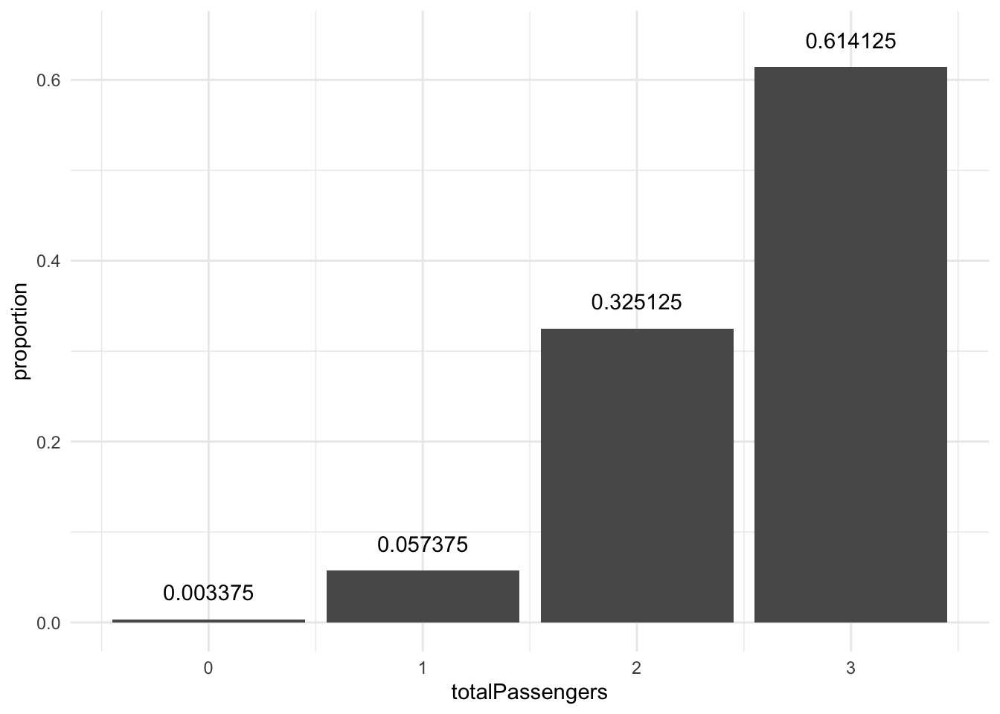
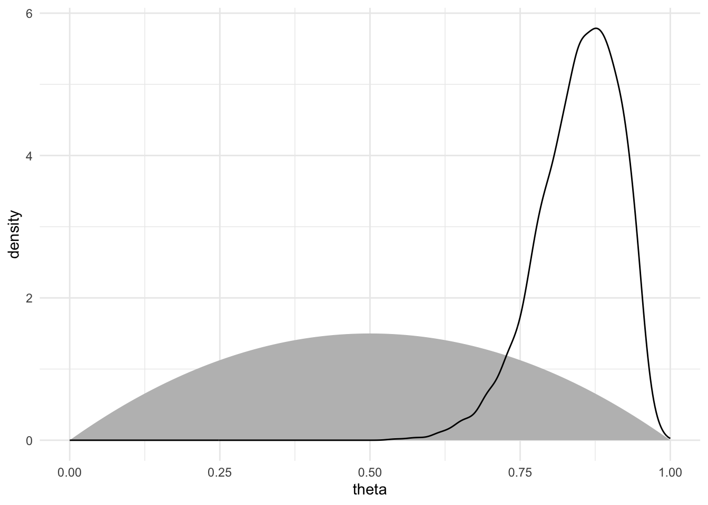
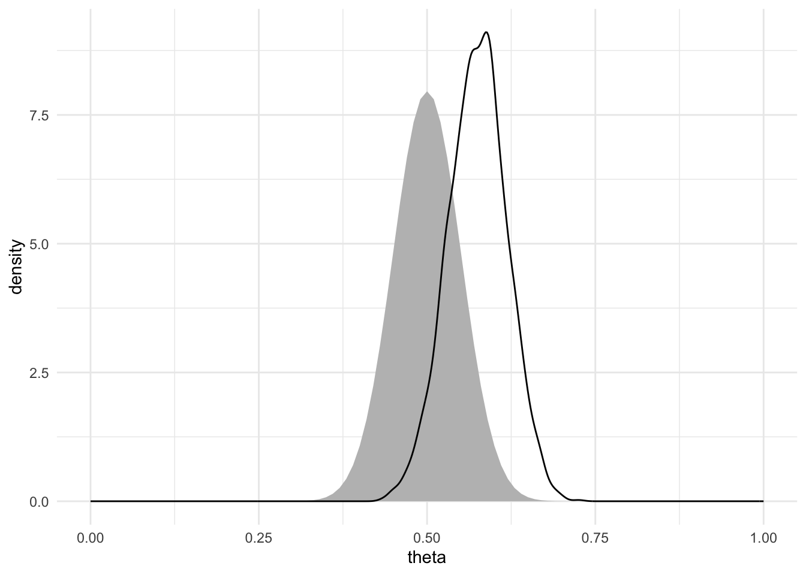

library(tidyverse)
library(ggformula)
library(mosaic)
library(posterior)
library(bayesplot)
library(causact) # causact::install_causact_deps()
theme_set(theme_minimal())
set.seed(123)causact
Introduction
There are three languages at the core of any data analysis: narrative, math, and code.
Narrative: This is the language of your real-world understanding.
Math: This is the language describing a faithful mathematical representation of your real-world narrative whose solution or output might turn your data into data-driven insight.
Code: This is the programming language, the code required to generate output that exactly or approximately solves your math problem or generates the desired output.
Using Bayesian inference is the provably best method of combining data with domain knowledge to extract interpretable and insightful results that lead us towards better outcomes.
This is the job of the business analyst; to drive better outcomes by compelling actions that are aligned with strategy and informed by data.

The business analyst workflow consists of transforming the real-world into a compact mathematical representation that we can use, along with data, to computationally search for insights. These computational insights must then be translated back into the real-world in such a way that they inspire action which leads to improved outcomes. This is your role: transform the real-world into the math/computer world, extract mathematical/statistical/computational insight, then transform that insight into a compelling real-world call for action.
Representing uncertainty
Real-world uncertainty makes decision making hard. Conversely, without uncertainty decisions would be easier. For example, if a cafe knew exactly 10 customers would want a bagel, then they could make exactly 10 bagels in the morning; if a factory’s machine could make each part exactly the same, then quality control to ensure the part’s fit could be eliminated; if a customer’s future ability to pay back a loan was known, then a bank’s decision to underwrite the loan would be quite simple.
In this section, we learn to represent our real-world uncertainty (e.g. demand for bagels, quality of a manufacturing process , or risk of loan default) in mathematical and computational terms. We start by defining the ideal mathematical way of representing uncertainty, namely by assigning a probability distribution to a random variable. Subsequently, we learn to describe our uncertainty in a random variable using representative samples as a pragmatic computational proxy to this mathematical ideal.
Think of a random variable as a mapping from potential outcomes to numerical values representing the probability we assign to each outcome.
| Outcome | Probability |
|---|---|
| Heads | 0.5 |
| Tails | 0.5 |
While the table might be adequate to describe the mapping of coin flip outcomes to probability, as we make more complex models of the real-world, we will want to take advantage of the concise (and often terse) notation that mathematicians would use. In addition, we want to gain fluency in math world notation so that we can successfully traverse the bridge between real world and math world.
Above, a random variable was introduced as a mapping of outcomes to probabilities. And, this is how you should think of it most of the time. However, to start gaining fluency in the math-world definition of a random variable, we will also view this mapping process as not just one mapping, but rather a sequence of two mappings: 1) the first mapping is actually the “true” probability-theory definition of a random variable - it maps all possible outcomes to real numbers, and 2) the second mapping, known as a probability distribution in probability theory, maps the numbers from the first mapping to real numbers representing how plausibility is allocated across all possible outcomes - we often think of this allocation as assigning probability to each outcome.
The terse math-world representation of a mapping process like this is denoted:
\[ X:\Omega \rightarrow \mathbb{R} \]
, where you interpret it as “random variable \(X\) maps each possible outcome in sample space omega to a real number.”
The second mapping process then assigns a probability distribution to the random variable. By convention, lowercase letters, e.g. \(x\), represent actual observed outcomes. We call \(x\) the realization of random variable \(X\) and define the mapping of outcomes to probability for every \(x \in X\) (read as \(x\) “in” \(X\) and interpret it to mean “for each possible realization of random variable \(X\)”).
In this book, we will use \(f\), to denote a function that maps each possible realization of a random variable to its corresponding plausibilty measure and use a subscript to disambiguate which random variable is being referred to when necessary. For the coin flip example:
\[ f_X: X \rightarrow [0,1] \]
Despite all this fancy notation, for small problems it is sometimes the best course of action to think of a random variable as a lookup table as shown here:
| Outcome | Realization (\(x\)) | \(f(x)\) |
|---|---|---|
| Heads | 1 | 0.5 |
| Tails | 0 | 0.5 |
and where \(f(x)\) can be interpreted as the plausability assigned to random variable \(X\) taking on the value \(x\).
The Bernoulli distribution (or a Bernoulli random variable):
| Outcome | Realization (\(x\)) | \(f(x)\) |
|---|---|---|
| Success | 1 | \(\pi\) |
| Failure | 0 | \(1-\pi\) |
With all of this background, we are now equipped to model uncertainty in any observable data that has two outcomes. The way we will represent this uncertainty is using two forms: 1) a graphical model and 2) a statistical model.
dag_create() |>
dag_node(
descr = "Coin flip",
label = "X") |>
dag_render(shortLabel = TRUE)\[ \begin{aligned}X &\equiv \textrm{Coin flip outcome with heads}=1 \textrm{ and tails}=0.\\X &\sim \textrm{Bernoulli}(p)\end{aligned} \]
Instead of working with probability distributions directly as mathematical objects, we will most often seek a representative sample and treat them as computational objects (i.e. data). For modelling a coin flip, the representative sample might simply be a list of \(0\) and \(1\) generated by someone flipping a coin or by a computer simulating someone flipping a coin.
Turning a mathematical object into a representative sample using R is quite easy as R can be used to generate random outcomes from just about all well-known probability distributions.
rbern(7, p = 0.5)[1] 1 0 1 0 1 1 0set.seed(123)
# Create dataframe of coinflip observations
numFlips = 50 ## flip the coin 50 times
df = data.frame(
flipNum = 1:numFlips,
coinFlip = rbern(n=numFlips,prob=0.5)
) |>
mutate(headsProportion = cummean(coinFlip))
# Plot results
ggplot(df, aes(x = flipNum, y = headsProportion)) +
geom_point() +
geom_line() +
geom_hline(yintercept = 0.5, color = "red") +
ggtitle("Running Proportion of Heads") +
xlab("Flip Number") +
ylab("Proportion of Heads") +
ylim(c(0,1))
\[ \begin{aligned}X_i &\equiv \textrm{If passenger } i \textrm{ shows up, then } X=1 \textrm{. Otherwise, } X = 0 \textrm{. Note: } i \in \{1,2,3\}.\\X_i &\sim \textrm{Bernoulli}(p = 0.85)\\Y &\equiv \textrm{Total number of passengers that show up.}\\Y &= X_1 + X_2 + X_3\end{aligned} \]
numFlights = 1000 ## number of simulated flights
probShow = 0.85 ## probability of passenger showing up
# choose random seed so others can
# replicate results
set.seed(111)
pass1 = rbern(n = numFlights, prob = probShow)
pass2 = rbern(n = numFlights, prob = probShow)
pass3 = rbern(n = numFlights, prob = probShow)
# create data frame (use tibble to from tidyverse)
flightDF = tibble(
simNum = 1:numFlights,
totalPassengers = pass1 + pass2 + pass3
)
# transform data to give proportion
propDF = flightDF |>
group_by(totalPassengers) |>
summarize(numObserved = n()) |>
mutate(proportion = numObserved / sum(numObserved))
# plot data with estimates
ggplot(propDF,
aes(x = totalPassengers, y = proportion)) +
geom_col() +
geom_text(aes(label = proportion), nudge_y = 0.03)
Simulation will always be your friend in the sense that if given enough time, a simulation will always give you results that approximate mathematical exactness. The only problem with this friend is it is sometimes slow to yield representative results. In these cases, sometimes mathematics provides a shortcut. The shortcut we study here is to define a probability distibution.
\[ \begin{aligned}Y &\equiv \textrm{Total number of passengers that show up.}\\Y &\sim \textrm{Binomial}(n = 3, p = 0.85)\end{aligned} \]
# transform data to give proportion
propExactDF = tibble(totalPassengers = 0:3) |>
mutate(proportion =
dbinom(x = totalPassengers,
size = 3,
prob = 0.85))
# plot data with estimates
ggplot(propExactDF, aes(x = totalPassengers,
y = proportion)) +
geom_col() +
geom_text(aes(label = proportion),
nudge_y = 0.03)
The above code is both simpler and faster than the approximation code run earlier. In addition, it gives exact results. Hence, when we can take mathematical shortcuts, we will to save time and reduce the uncertainty in our results introduced by approximation error.
Our representation of uncertainty takes place in three worlds: 1) the real-world - we use graphical models (i.e. ovals) to convey the story of uncertainty, 2) the math-world - we use statistical models to rigorously define how random outcomes are generated, and 3) the computation-world - we use R functions to answer questions about exact distributions and representative samples to answer questions when the exact distribution is unobtainable.
Joint distributions tell you everything
The most complete method of reasoning about sets of random variables is by having a joint probability distribution. A joint probability distribution, , assigns a probability value to all possible assignments or realizations of sets of random variables. The goal of this section is to 1) introduce you to the notation of joint probability distributions and 2) convince you that if you are given a joint probability distribution, then you would be able to answer some very useful questions using probability.
Joint distributions
Marginal distributions
Conditional distributions
Limitations of joint distributions
Why don’t we just use joint probability distributions all the time? Despite the expressive power of having a joint probability distribution, they are not that easy to directly construct due to the curse of dimensionality. As the number of random variables being considered in a dataset grows, the number of potential probability assignments grows too. Even in the era of big data, this curse of dimensionality still exists.Generally speaking, an exponential increase is required in the size of the dataset as each new descriptive feature is added.
Let’s assume we have \(n\) random variables with each having \(k\) values. Thus, the joint distribution requires \(k^n\) probabilites. Even if \(k=2\) and \(n=34\), this leads to 17,179,869,184 possibilities (over 17 billion). To make this concrete, a typical car purchase decision might easily look at 34 different variables (e.g. make, model, color, style, financing, etc.). So, to model this decision would require a very large joint distribution which actually dwarfs the amount of data that is available. As a point of comparison, well under 100 million motor vehicles were sold worldwide in 2019 - i.e. less than one data point per possible combination of features. Despite this “curse”, we will learn to get around it with more compact representations of joint distributions. These representations will require less data, but will still yield the power to answer queries of interest; just as if we had access to the full joint distribution.
Graphical models tell joint distribution stories
Graphical models serve as compact representations of joint probability distributions.
It’s okay to not draw a perfect model when you are first attacking a problem.
graph TD
X[ X: It is raining ]
Y[ Y: The curb is wet ]
X --> Y
The diagram above is what mathematicians and computer scientists call a graph. To them, a graph is a set of related objects where the objects are called nodes and any pair of related nodes are known as an edge. For our purposes, a node is a visual depiction of a random variable (i.e. an oval) and the presence of a visible edge indicates a relationship between the connected random variables.
Our first vetting should be to ensure that nodes can be modelled as a random variable with each node representing a mapping of real-world outcomes to numerical values (see the “Representing uncertainty” section above).
Any variable we include in our models needs to be clearly defined and fulfill the requirements of a random variable; afterall, this is our key technique for representing the real-world in mathematical terms.
Mathematically, our goal is to have a joint distribution over the random variables of interest. Once we have that, we can answer any probability query we might have using marginal and conditional distributions (see the “Joint distributions tell you everything” section above).
For all but very simple models like the one above, a tabular representation of a joint distribution becomes unmanageable (computationally, cognitively, and statistically).
To overcome this, we use a different, more-compact structure - called a Bayesian Network (BN). Bayesian networks are compressed, easier-to-specify recipes for generating a full joint distribution. So, what is a BN? It is a type of graph (i.e. nodes and edges), specifically a directed acyclic graph (DAG), with the following requirements:
All nodes represent random variables. They are drawn using ovals. By convention, a constant is also considered a random variable.
All edges are pairs of random variables with a specified direction of ordering. By convention, the direction is from parent node to child node. While not always true, it is usually good to have edges reflecting a causal ordering. Edges are drawn using arrows where the tail originates from the parent and the tip points to a child.
Edges are uni-directional, they must only flow in one direction between any two nodes (i.e. directed).
The graph is acyclic meaning there are no cycles. In other words, if you were to put your finger on any node and trace a path following the direction of the edges, you would not be able to return to the starting node.
Any child node’s probability distribution will be expressed as conditional solely on its parents’ values, i.e. \(P(\text{child}\mid \text{parent(s)})\); this assumption is what enables more compact representations of joint distributions.
The one edge, \(Y \rightarrow X\), means that our uncertainty in \(X\) is measured using a probability function conditional on its parent - i.e. \(P(X|Y)\). Since there are no edges leading into \(Y\), it has no parents, its probability distribution is \(P(Y)\) . With those two probabilities in place, we can recover the joint distribution, \(P(X,Y)\), based on the definition of conditional probability \(P(X,Y) = P(Y) \times P(X|Y)\).
If there are no edges between \(X\) and \(Y\), then the joint distribution is recovered via \(P(X,Y)=P(X)\cdot P(Y)\). In this case, the two random variables are independent and that is not a model structure consistent with the scenario we are exploring. If the ordering of nodes for \(X\) and \(Y\) are reversed such that \(Y\) is the parent of \(X\), then the joint distribution would be recovered via \(P(X,Y)=P(Y)\cdot P(X\mid Y)\). This math is not consistent with the story we are trying to tell. The story is that rain causes the curb to be wet, not the other way around.
The general rule for a probabilistic graphical model is that its joint distribution can be factored using the chain rule formula for DAGs where \(P(X_1, X_2, \ldots, X_n) = \prod_I P(X_i|Parents(X_i))\). Hence, to model any one random variable, we only have to model its relationship to its parents instead of modelling its relationship to all of the random variables included in the model.
See mathematicalmonk’s youtube video on how joint distributions are compactly represented using DAGs here: https://youtu.be/3XysEf3IQN4.
Bayesian inference on graphical models
Plausible reasoning - an allocation of credibility/plausibility to all possible explanations of the observations.
Plausible reasoning in the math world is called Bayesian inference - a methodology for updating the credibility/plausibility of the various explanations in our mathematical representation of the world as more data becomes available.
Let’s walk through a hypothetical argument between two scientists as to the effect of a new drug on cognition in Alzheimer’s disease (AD).
Assume the two scientists have competing models for what effect the drug will have on the cognition of patients with AD:
The Optimist Model (Model1) : This model is from a scientist who is very optimistic about the effect of the drug and argues that 70% of all patients will see at least a 5% increase in cognition.
The Pessimist Model (Model2) : This model is from a scientist who is very pessimistic about the effect of the drug and argues that 20% of all patients will see at least a 5% increase in cognition.
These two scientists recognize and respect their differing opinions - they agree to test the new drug in one patient. They hire you as a data analyst and ask you to make the decision as to whose model is more credible in light of the test’s results. Your job is to allocate credibility to the two competing models both before seeing the test results and after seeing the test results. Initially, you might not have any reason to favor one model over another, but as data is collected, your belief in whose model is more plausible/believable/credible will change. For example, if cognition decreases, then the pessimist model would seem more credible. Your task is to allocate credibility (using probability theory) to the various models/explanations, before and after the data becomes available.
Building a graphical model of the real-world
The first step is to create a graphical model/representation of the real world.
Starting simple, let’s only imagine that we test the drug in one patient and our single data point (i.e. whether cognition increases by at least 5% or not) follows a Bernoulli distribution.
The graphical model is simply:
dag_create() |>
dag_node(
descr = "Cognition increases",
label = "X") |>
dag_render(shortLabel = TRUE)And, the statistical model with the mathematical details is represented like this:
\[ \begin{aligned}X \equiv& \textrm{ Cognition increases: } \\ & \textrm{ If cognition increases more than 5}\% \textrm{, then }X=1 \textrm{ otherwise, }X=0.\\X \sim & \textrm{ Bernoulli}(\theta)\\\end{aligned} \]
We have seen this model before when representing coin flips. Our data is analogous to heads or tails of a coin flip. The data will be reduced to a zero or one for each patient. If given \(\theta\), we could generate data using rbern(n=1, prob=theta), but, we do not know \(\theta\); the reason we are looking at data is to answer the question: “what is \(\theta\)?”
From the story above, \(\theta\) can only take on two values. In the optimistic model \(\theta = 70\%\) and in the pessimistic model \(\theta = 20\%\). So, we have two models of the world and are uncertain as to which one is more plausible. Without data, we have no reason to believe one scientist over another, so \(P(\theta=70\%)=50\%\) and \(P(\theta=20\%)=50\%\) - i.e. each scientist is equally likely to be correct. This is just like saying \(P(\text{model1})=P(\text{model2})=50\%\). Before any data is considered, this allocation of credibility assigning probability to all the models being considered is called the prior. The prior is the initial probability allocated among all the possible models.
See https://youtu.be/nCRTuwCdmP0 for gaining some intuition about prior probabilities.
So now, we can more completely specify our data story using both a graphical and a statistical model with specified prior probabilities. The graphical model is now two ovals representing our uncertainty in the probability of success and the observed cognition increase (random variable math-labels for \(\Theta\) and \(X\) are included for extra clarity in connecting the graphical model and the statistical model):
dag_create() |>
dag_node(
descr = "Cognition increases",
label = "X") |>
dag_node(
descr = "Success probability",
label = "Θ",
child = "X") |>
dag_render()And, the statistical model is represented like this:
\[ \begin{aligned} X \equiv& \textrm{ Cognition increases: } \\ & \textrm{ If cognition increases more than 5} \% \textrm{, then }X=1 \textrm{ otherwise, }X=0.\\ X \sim & \textrm{ Bernoulli}(\theta)\\ \Theta \equiv& \textrm{ Success probability: } \\ \end{aligned} \] \[ \Theta \sim \begin{array}{ccc} \textrm{Outcome } & \textrm{ Realization }(\theta) & f(\theta) \\ \hline \textrm{Model1} & \textrm{ 70}\% & \textrm{ 50}\% \\ \textrm{Model2} & \textrm{ 20}\% & \textrm{ 50}\% \\ \end{array} \]
where the prior probability distribution for \(\Theta\) is given in tabular form.
The graphical model and statistical model are two different ways of representing the same story. The graphical model is more visual and intuitive, while the statistical model is more precise and mathematical. Both are useful for different purposes, but both represents a generative model, i.e., a recipe for simulating real-world data observations. In this case, following the top-down flow of the graphical model, the recipe is:
- Simulate a potential success probability by randomly picking, with equal probability, either the optimist or pessimist model.
- Simulate a drug’s success by using the probability from (1) and generating a Bernoulli random variable with that probability of success.
We can easily show how to simulate an observation by writing code for the recipe in R:
# Step 1: Simulate a potential success probability
theta = sample(size = 1, x = c(0.7, 0.2), prob = c(0.5, 0.5))
# Step 2: Simulate a drug's success
x = rbern(n = 1, prob = theta)
theta[1] 0.7x[1] 1Much of your subsequent work will use this notion of generative models as recipes. You will 1) create generative models that serve as skeleton recipes - recipes with named probability distributions and unknown parameters - for how real-world data arises, and 2) inform models with data by reallocating plausibility to the recipe parameters that are most consistent with the data.
A guiding principle for creating good generative models is that the generated data should mimic data that you, as a data analyst, believe is plausible. If the generative model outputs implausible data in high frequency, then your model is not capturing the essence of the underlying data story; your modelling assumptions will need work. When the generative model seems correct in the absence of data, then data can feed the updating process which sensibly reallocates prior probability so that model parameters that tend to generate data similar to the observed data are deemed more plausible.
From model to joint distribution
The graphical model shows that we have uncertainty about two related random variables: 1) Success Probability (\(\Theta\)) Cognition Increases (\(X\)). Our assumption - built into our prior - is that one of our two models, \(\theta = 20\%\) or \(\theta = 70\%\), is correct.
Note
This implicit assumption that one of the considered generative models is correct is sometimes referred to as the small world assumption. See this comparison by Richard McElreath of small world versus large world highlighting the implications of this assumption: https://youtu.be/WFv2vS8ESkk.
We are also confident about what collecting data from one patient might yield: either a single success or a single failure in terms of the cognition increase. Prior to collecting data, there are four combinations of model and data that are potential truths. Each combination’s prior plausibility, represented by \(a\%\), \(b\%\), \(c\%\) and \(d\%\), are elements of the table:
\[ \begin{array}{cc|cc} & & \textrm{ Possible} & \textrm{Models } \\ & & \theta = 70\% & \theta = 20\% \\ \hline\textrm{Possible} & \textit{Success} & a\% & b\% \\\textrm{Data} & \textit{Failure} & c\% & d\%\end{array} \]
# Simulate many samples from the generative model
samples <- map(1:10000, function(x) { theta = sample(size = 1, x = c(0.7, 0.2), prob = c(0.5, 0.5)); x = rbinom(size=1, n=1, prob=theta); tibble(theta, x) }) |> list_rbind()
head(samples)| theta | x |
|---|---|
| 0.7 | 0 |
| 0.2 | 0 |
| 0.2 | 0 |
| 0.2 | 1 |
| 0.2 | 0 |
| 0.7 | 1 |
# Calculate joint probability distribution before seeing the data, and the marginal of theta (prior)
joint <- samples |>
group_by(theta, x) |>
summarize(count = n(), .groups = "drop") |>
mutate(p = count / sum(count))
joint| theta | x | count | p |
|---|---|---|---|
| 0.2 | 0 | 4000 | 0.4000 |
| 0.2 | 1 | 1025 | 0.1025 |
| 0.7 | 0 | 1536 | 0.1536 |
| 0.7 | 1 | 3439 | 0.3439 |
joint |>
group_by(theta) |>
summarize(prior = sum(p))| theta | prior |
|---|---|
| 0.2 | 0.5025 |
| 0.7 | 0.4975 |
tally(~ x + theta, data = samples, format = 'proportion') theta
x 0.2 0.7
0 0.4000 0.1536
1 0.1025 0.3439Bayesian updating of the joint distribution
\[ P(Model | Data) = \frac{P(Data|Model) \times P(Model)}{P(Data)} \]
The above formula is called Bayes’ Theorem and it is the mathematical engine that drives Bayesian inference. It is a simple formula, but it is very powerful. It tells us how to update our beliefs about the plausibility of various models in light of new data. The formula has four components:
- \(P(Model | Data)\): This is the posterior probability of the model given the data. It is what we are trying to compute. It tells us how plausible each model is after seeing the data.
- \(P(Data|Model)\): This is the likelihood of the data given the model. It tells us how likely the observed data is under each model.
- \(P(Model)\): This is the prior probability of the model.
- \(P(Data)\): This is the marginal likelihood of the data. It is a normalizing constant that ensures the posterior probabilities sum to one.
To use Bayes’ Theorem, we need to compute the likelihood of the data under each model. This is done using the probability distributions defined in our statistical model.
Assume we observe a success, i.e. the patient’s cognition increases by at least 5%. The likelihood of this data under each model is:
- Under Model1 (\(\theta = 70\%\)): \(P(X=1|\theta=70\%) = 0.7\)
- Under Model2 (\(\theta = 20\%\)): \(P(X=1|\theta=20\%) = 0.2\)
The marginal likelihood of the data is computed by summing the likelihoods weighted by the prior probabilities:
\[ P(Data) = P(X=1) = P(X=1|\theta=70\%) \times P(\theta=70\%) + P(X=1|\theta=20\%) \times P(\theta=20\%) = 0.7 \times 0.5 + 0.2 \times 0.5 = 0.45 \] Now, we can plug these values into Bayes’ Theorem to compute the posterior probabilities:
- For Model1 (\(\theta = 70\%\)):
\[ P(\theta=70\%|X=1) = \frac{P(X=1|\theta=70\%) \times P(\theta=70\%)}{P(X=1)} = \frac{0.7 \times 0.5}{0.45} \approx 0.778 \]
- For Model2 (\(\theta = 20\%\)):
\[ P(\theta=20\%|X=1) = \frac{P(X=1|\theta=20\%) \times P(\theta=20\%)}{P(X=1)} = \frac{0.2 \times 0.5}{0.45} \approx 0.222 \]
So, after observing a success, the posterior probabilities are approximately 77.8% for Model1 and 22.2% for Model2. This means that after seeing the data, we believe that Model1 is more plausible than Model2.
# Calculate joint probability distribution after seeing the data (x=1), and the marginal of theta (posterior)
joint <- samples |>
filter(x == 1) |>
group_by(theta, x) |>
summarize(count = n(), .groups = "drop") |>
mutate(p = count / sum(count))
joint| theta | x | count | p |
|---|---|---|---|
| 0.2 | 1 | 1025 | 0.2296 |
| 0.7 | 1 | 3439 | 0.7704 |
joint |>
group_by(theta) |>
summarize(prior = sum(p))| theta | prior |
|---|---|
| 0.2 | 0.2296 |
| 0.7 | 0.7704 |
Generative DAGs as scientific and statistical models
Up to this point, we specified a prior joint distribution using information from both a graphical model and a statistical model. In this section, we combine the two model types, graphical models and statistical models, into one visualization called the generative DAG.
The advantage of this is that the generative DAG unites real-world measurements (e.g. cognition increases) with their math/computation world counterparts (e.g. \(X \sim \textrm{Bernoulli}(\theta)\)) without requiring the cognitive load of flipping back-and-forth between the graphical and statistical models.
Moreover, generative DAGs, when combined with data, enable Bayesian inference to be automated (yay! no more manual calculations using Bayes rule).
Generative DAGs
To build a generative DAG, we combine a graphical model with a statistical model into a single unifying representation.
Note
A statistical model is a mathematically expressed recipe for creating a joint distribution of related random variables. Each variable is defined either using a probability distribution or a function of the other variables. Statistical model and generative DAG will be used interchangeably. The term statistical model is just the mathematically expressed recipe. Generative DAG is the graphically expressed recipe with an embedded statistical model.
The objective in building generative DAGs is to capture how we might go about simulating real-world measurements using the mathematical language we’ve been learning. Good generative DAGs are recipes for simulating a real-world observation in a way that reflects our domain knowledge. Then, with a generative DAG and some actual data, we will ask the computer to do Bayesian inference for us and to output an updated joint distribution of the random variables in our DAG.
The creation of a generative DAG mimics the creation of graphical models with accompanying statistical models. Both the structure of the DAG and the definition of the random variables should reflect what a domain expert knows, or wants to assume, about the data generating process being investigated.
Here is the generative DAG for the scenario described before. We have seen some elements of this DAG before. For example, the Cognition increases \(X\) node, whose prominent feature is that it can only take on two-values, yes or no. We model these binary-valued real-world outcomes with the probabilistic mapping (Bernoulli PMF) \(x \sim \textrm{Bernoulli}(\theta)\).
dag_create() |>
dag_node(
descr = "Cognition increases",
label = "x",
rhs = bernoulli(theta)) |>
dag_node(
descr = "Success probability",
label = "theta",
child = "x",
rhs = uniform(0,1)) |>
dag_render()Other elements of the DAG are new. Notice, theta is now spelled out phonetically as opposed to using the actual Greek letter math symbol of \(\theta\). While this need not be done when drawing a generative DAG by hand, we phonetically spell out the Greek letter \(\theta\) as theta here because computer code and computer-generated DAG visuals lack easy support for the Greek alphabet. Additionally, and more importantly, we switch to using lowercase notation for both x and theta as we want to highlight that ovals in generative DAG models represent a single realization of the random variable. Later we will introduce the representation of more than one realization.
Building generative models
As we build these generative DAGs, it is often easiest to build and read them from bottom to top; start by converting your target measurement, in this case whether the cognition of patients with AD increases after treatment with a new drug, to a brief real-world description (e.g. Cognition increases). This description is the top-line of the oval. For rigor, a more formal definition should be stored outside of the generative DAG in a simple text document that can be referenced by others.
Every node will also have a mathematical line (e.g. \(x \sim \textrm{Bernoulli}(theta)\)). The mathematical line will always follow a three-part structure of 1) Left-hand side, 2) Relationship Type, and 3) Right-hand side:
Each line of a statistical model follows one of two forms: or
Left-hand side (LHS): a mathematical label for a realization of the node (e.g. \(x\) or \(y\) or whatever symbol/word you choose). The purpose of the label is to have a very short way of referring to a node. To that end, you cannot include spaces in this label and try to keep it at five letters or less.
Relationship Type: There are two types of relationships that can be specified:
a probabilistic relationship, denoted by the \(\sim\) symbol, where the LHS node’s value is determined with some uncertainty/randomness as a function of its inputs, such as the outcome of a coin flip. \(LHS \sim \textrm{Probability mass/density function}\) Or,
a deterministic relationship denoted by an \(=\) symbol. A deterministic relationship means the LHS node’s value is determined with zero uncertainty as a function of its inputs. \(LHS \sim \textrm{Deterministic function}\)
- Right-hand side (RHS): either a known probability distribution (i.e., probability mass or density function) governing the node’s random outcome (e.g. \(\textrm{Bernoulli}(\theta)\)) or a deterministic mathematical function defining the node’s value (e.g. \(x + y\) ). In both cases, any parameters/variables/inputs in the RHS must be represented by a parent node to the current node in your model.
To model subsequent nodes, consider any parameters or variables on the right-hand side of the mathematical lines that remain undefined; all of these undefined parameters must be defined on the LHS of a parent node. Hence, for \(x \sim \textrm{Bernoulli}(theta)\), \(\theta\) should be (and is) the LHS of a parent node of \(x\).
Now to have a complete statistical model, we need a recipe for how all the random variables of interest can be generated. Previously, when doing Bayes rule calculations by hand, we considered a recipe for with only two possible values. However, as we move towards using the computer to do Bayesian inference for us, we now consider all of the possibilities - any value between 0 and 1.
The generative DAG above introduces us to the uniform distribution. The \(\textrm{uniform}(a, b)\) distribution is a two-parameter probability distribution with the property that all real numbers between \(a\) and \(b\) are generated with equal probability. Hence, for our application where represents a probability restricted to be between 0 and 1, we use \(\textrm{uniform}(0, 1)\) to represent our consideration of the infinite possible values of success probability ranging from 0% to 100%.
Since all nodes/variables (\(x\) and \(\theta\)) have a mathematical line, and all RHS parameters/variables are defined, the DAG above represents a generative model. The top line of each oval is a meaningful real-world description of the random variable and the bottom line gives the math.
Notice that the generative DAG is a recipe for simulating or generating a single sample/realization from the joint distribution - read it from top-to-bottom: 1) first, simulate a random sample value of \(\theta\), say the realization is 10%, and then 2) use that sample value to simulate \(x\), which assuming \(\theta = 10\%\), is either 0 with 90% probability or 1 with 10% probability.
For illustrating the simulation aspect of a generative DAG, we can use simple R functions to get a joint realization of the two variables. We model \(\theta\) as \(\textrm{uniform}(0, 1)\) and \(x\) as \(\textrm{bernoulli}(\theta)\) computationally using the functions runif and rbern (i.e. rfoo for the uniform distribution and Bernoulli distribution, respectively). Hence, a random sample from the joint distribution of \(\Theta\) and \(X\) can be generated with the following code:
set.seed(1234)
# generate random theta: n is # of samples we want
theta = runif(n=1,min=0,max=1)
theta # print value[1] 0.1137# generate random X
x = rbern(n = 1, prob = theta)
x # print value[1] 0For the particular model above, the recipe picked a random \(\theta\) of 11.4% and then, using that small probability of success, generated a random \(x\) with 11.4% chance of giving a one. Unsurprisingly, the random sample from \(x\) was zero.
A generative models is a mathematical abstraction of a real-world data generating process (DGP); they represent, in the formal language of probability theory, our knowledge of the DGP. We will use these abstractions and Bayesian inference to combine prior information in the form of a generative DAG with observed data. The combination will yield us a posterior distribution; a joint distribution over our RV’s of interest that we can use to answer questions and generate insight. For most generative DAGs, Bayes rule is not analytically tractable (i.e. it can’t be reduced to simple math), and we need to define a computational model using a probabilistic programming language.
Representing observed data with fill and a plate
A generative DAG represents a family of recipes (i.e., hypothesis space, where each hypothesis/recipe is indexed by a parameter value or combination of parameter values) for simulating one real-world observation. We can then use data to inform us about which of the recipes seem more consistent with the data. For example, we know that observing cognition increase not in one but three patients with AD after drug treatment would be less consistent with the recipe based on the pessimist model \(\theta = 20\%\) and more consistent with the recipe based on the optimist model \(\theta = 70\%\). Thus, reallocating plausibility in light of this type of data becomes a milestone during our data analysis.
In the generative DAG above, the reallocation of probability in light of the data will be done in such a way as to give more plausibility to \(\theta\) values consistent with the observations and less plausibility to the other \(\theta\) values.
dag_create() |>
dag_node(
descr = "Cognition increases",
label = "x",
rhs = bernoulli(theta),
obs = TRUE
) |>
dag_node(
descr = "Success probability",
label = "theta",
child = "x",
rhs = uniform(0,1)) |>
dag_render()dag_create() |>
dag_node(
descr = "Cognition increases",
label = "x",
rhs = bernoulli(theta),
obs = TRUE) |>
dag_plate(
descr = "Observation",
label = "i",
nodeLabels = "x") |>
dag_node(
descr = "Success probability",
label = "theta",
child = "x",
rhs = uniform(0,1)) |>
dag_render()In the generative DAG above, there are some additional elements. Observed data - in contrast to latent parameters/variables or unobserved data - gets represented by using fill shading of the ovals (e.g. the darker fill of Cognition increases). Also, rectangles called plates are used to indicate repetition of the enclosed random variable (or group/subgraph of random variables). In this case, the plate indicates we have observed multiple [modeled as independent in the corresponding statistical model] outcomes/realizations of \(x\) from treating more than one patient with the drug.
Text in the lower right-hand corner of the plate indicates how variables inside the plate are repeated and indexed. In this case, there will be one realization of \(x\) for each observation. The letter \(i\) represents a short-hand label used to index the observations. For example, x[i] is the \(i^{\text{th}}\) observation of x and therefore, x[2] would the \(2^{\text{nd}}\) observation of x. The [3] in the lower-right hand corner represents the number of repetitions of the RV, in this case there are 3 observations of stores: x[1], x[2], and x[3].
Since the \(\theta\) node lacks a plate, the generative recipe implied by this generative DAG calls for just one realization of \(\theta\) to be used in generating all 3 observations of \(x\). In other words, our recipe assumes there is just one “true” \(\theta\) value and all observations are Bernoulli trials with the same \(\theta\) value. The question we will soon answer computationally is “how to reallocate our plausibility among all possible”true” values of \(\theta\) given that we have observed 3 observations of \(x\)?”
More rigorous mathematical notation and definitions can be found in the lucid recommendations of Michael Betancourt. See his work Towards a Principled Bayesian Workflow (Rstan) for a more in-depth treatment of how generative models and prior distributions are only models of real-world processes. https://betanalpha.github.io/assets/case_studies/principled_bayesian_workflow.html. Additionally, Betancourt’s Generative Modelling (https://betanalpha.github.io/assets/case_studies/generative_modeling.html) is excellent in explaining how models with narrative interpretations tell a set of stories on how data are generated. For us, we will combine our generative DAGs with observed data to refine our beliefs about which stories (i.e. which parameters) seem more plausible than others.
Computational Bayesian inference workflows
This section illustrates how to use the causact package to specify and run computational Bayesian inference workflows. The package is an easy-to-use, intuitive, and visual interface to numpyro. In fact, it automates the creation of numpyro code based on a user creating a generative DAG. causact advocates and enables generative DAGs to serve as a business analytics workflow (BAW) platform upon which to launch business discussions, create statistical models, and automate computational Bayesian inference.
Getting started with dag_foo() functions
In the code below, the two lines beginning with dag_ output R list objects consisting of six data frames. Let’s not worry too much about the details, but notice that one of the data frames is for storing node information (i.e. nodesDF) and one for edge information (i.e. edgesDF).
## returns a list of data frames to store DAG info
dag_create()$nodes_df
[1] id label descr data rhs child
[7] obs rhsID distr auto_label auto_descr auto_data
[13] dimID auto_rhs
<0 rows> (or 0-length row.names)
$edges_df
[1] id from to type
<0 rows> (or 0-length row.names)
$arg_df
[1] rhsID argName argType argValue argDimLabels
<0 rows> (or 0-length row.names)
$plate_index_df
[1] indexID indexLabel indexDescription indexDisplayName
[5] dataNode rhs
<0 rows> (or 0-length row.names)
$plate_node_df
[1] indexID nodeID
<0 rows> (or 0-length row.names)
$dim_df
[1] dimID nodeID dimType dimDataSource dimValue
<0 rows> (or 0-length row.names)
attr(,"class")
[1] "causact_graph"## adds a node to the list with given description
dag_create() |> dag_node("BernoulliRV")$nodes_df
id label descr data rhs child obs rhsID distr auto_label auto_descr
1 1 <NA> BernoulliRV <NA> <NA> NA FALSE NA FALSE BrRV BernoulliRV
auto_data dimID auto_rhs dec det
1 <NA> NA <NA> FALSE FALSE
$edges_df
[1] id from to type
<0 rows> (or 0-length row.names)
$arg_df
[1] rhsID argName argType argValue argDimLabels
<0 rows> (or 0-length row.names)
$plate_index_df
[1] indexID indexLabel indexDescription indexDisplayName
[5] dataNode rhs
<0 rows> (or 0-length row.names)
$plate_node_df
[1] indexID nodeID
<0 rows> (or 0-length row.names)
$dim_df
[1] dimID nodeID dimType dimDataSource dimValue
<0 rows> (or 0-length row.names)
attr(,"class")
[1] "causact_graph"The function dag_create() is used to create an empty list object that we will refer to as a causact_graph. Subsequently functions like dag_node() and dag_edge() will take a causact_graph object as input, modify them, and provide a causact_graph object as output. This feature allows for the chaining (i.e. using |>) of these functions to build up your observational model. Once done building with dag_create(), dag_node(), and dag_edge(), a call to the dag_render() function outputs a visual depiction of your causact graph.
dag_create() |>
dag_node("BernoulliRV") |>
dag_render() ## visualize graphFour steps to creating graphical models
Let’s use the dag_foo() functions to make a generative DAG with Bernoulli data, a uniform prior, and some observed data:
\[ \begin{aligned}X &\sim \textrm{Bernoulli}(\theta) \\\theta &\sim \textrm{uniform}(0,1)\end{aligned} \]
Assume two successes and one failure such that:
\[ x_1 = 1, x_2 = 1, x_3 = 0 \]
The following code uses the descr and label arguments of the dag_node() function to, respectively, provide a long label for your random variable that is easily understood by business stakeholders and a short label that is more for notational/mathematical convenience:
dag_create() |> # just get one node to show
dag_node(descr = "Cognition increases", label = "x") |>
dag_render()Since, we actually observe this node as data, we use the data argument of the dag_node() function to specify the observed values:
dag_create() |> # make it an observed node by adding data
dag_node(descr = "Cognition increases", label = "x",
data = c(1,1,0)) |>
dag_render()The node’s darker fill is automated because of the supplied observed data and the [3] means there are three observed realizations in the supplied data vector. You could also use a plate to represent the multiple realizations, but I recommend plate creation to be the last step in creating generative DAGs via the causact package.
One goal we often have is to take a sample of data and find plausible parameters within a distribution family (e.g. normal, gamma, etc.) governing how that data might have been generated - at its core, Bayesian inference is a search for plausible parameters of a specified generative DAG. To specify the distribution family governing the observed data, use the rhs argument of the dag_node() function.
Note
rhs stands for right-hand side. The rhs of a node is reserved for indicating how the node is generated as a function of its parent nodes’ values. Alternatively, when not used as a distribution specification, the rhs is an algebraic expression or other function of data converting parent node values into a realization of the node’s value.
There is an implicit assumption that all unknown variables will eventually be defined by parent nodes - the causact package will not check for this. In the case below, we are specifying a parameter theta that will need to eventually be added as a parent node.
dag_create() |> # specify data generating distribution
dag_node(descr = "Cognition increases", label = "x",
rhs = bernoulli(theta), ##add distribution
data = c(1,1,0)) |>
dag_render()Note, a random variable’s distribution must be part of causact. The full list of causact distributions can be found by running the following line:
?causact::distributionsFor each unknown argument remaining on the rhs of any nodes in your causact graph, one must eventually All unknown rhs arguments for nodes must be defined prior to running any Bayesain computations.define how the unknown argument can be generated. In our data node above, the only unknown argument on the rhs is theta. We define the generative model for theta by making an additional node representing its value:
dag_create() |>
dag_node(descr = "Cognition increases",
label = "x",
rhs = bernoulli(theta), # no quotation marks
data = c(1,1,0)) |>
dag_node(descr = "Success probability",
label = "theta", # labels needs quotes
rhs = uniform(0,1)) |>
dag_render()Notice, the parameters of the rhs distribution for theta are not unknown - they are actually constants (i.e. 0 and 1) and hence, no additional parent nodes are required to be created. Take note that theta on the rhs for the Cognition increases node does not require quotes as it refers to an R object; specifically, this refers to the R object created by:
dag_node(descr = "Success probability",
label = "theta", # label needs quotes
rhs = uniform(0,1))where the theta object is given its name by the label = "theta" argument; when creating node labels via this argument, quotes are typically required.
Without a link between theta and x, one is not creating a properly factorizable directed acyclic graph as is required for specifying a joint distribution. Using the child argument of dag_node, one can now create the required link between theta as a parent node and theta as an argument to the distribution of its child node x:
dag_create() |> # connect parent to child
dag_node(descr = "Cognition increases", label = "x",
rhs = bernoulli(theta),
data = c(1,1,0)) |>
dag_node(descr = "Success probability", label = "theta",
rhs = uniform(0,1),
child = "x") |> ## ADDED LINE TO CREATE EDGE
dag_render()
Note
When using the child argument, please ensure the child was previously defined as a node. Generative DAGs are designed to be built from bottom-to-top reflecting the way a business analyst would create these DAGs. Note that computer code for Bayesian inference, like numpyro code, requires the exact opposite order - parent nodes get defined prior to their children. One way the causact package accelerates the BAW is by facilitating a bottom-up workflow that can be automatically translated to top-down computer code.
For more complicated modelling, repeat this process of adding parent nodes until there are no uncertain parameters on the right hand side of the top nodes.
Running Bayesian inference on a generative DAG
Now we use dag_numpyro() function to get a posterior distribution based solely on the causact_graph that we just made. A call to dag_numpyro() expects a causact_graph as the first argument, so make sure you are not passing the output of the dag_render() function by mistake. Use dag_render() to get a picture and dag_numpyro() for Bayesian inference - just do not mix them in the same chain of functions. The second argument of dag_numpyro() is the mcmc argument and its default value is TRUE. When mcmc = FALSE, dag_numpyro(mcmc = FALSE) gives a print-out of the numpyro code that would be run by causact to get a posterior without running the code. You can cut and paste this code into a new R-script if you wish and run it there (ESPECIALLY USEFUL FOR DEBUGGING WHEN YOU GET AN ERROR AT THIS STAGE). Alternatively and preferably, the numpyro code should run automatically in the background by setting mcmc = TRUE or simply omitting this argument because it is the default value. Usage is shown below:
# running Bayesian inference
# remove dag_render() and save graph object
graph = dag_create() |>
dag_node(descr = "Cognition increases",
label = "x",
rhs = bernoulli(theta),
data = c(1,1,0)) |>
dag_node(descr = "Success probability",
label = "theta",
rhs = uniform(0,1),
child = "x")
# pass graph to dag_numpyro
draws = graph |> dag_numpyro()After some time, during which numpyro computes our posterior Bayesian distribution, we get that distribution as representative sample in an object I typically name draws - a data frame of posterior draws that is now useful for computation and plotting. For a quick visual-check that all went well, pass the draws data frame to the dagp_plot() function to get a quick look at the credible (posterior) values of theta:
draws |> dagp_plot() # eyeball P(theta>0.65)the lighter fill indicates a 90% percentile interval where 5% of plausible values are excluded from the left- and right-sides of the colored interval. Consider this range your credilble values for theta; hence, our posterior belief is that theta is somewhere in the 27% to 90% range. The darker fill within the colored interval indicates a 10% percentile interval; hence, the most likely values of theta are centered around 60%. For more customized graphs, please use bayesplot or ggplot2 with ggdist with draws as the input data.
Investigating the posterior distribution
The object we named draws is our posterior distribution after numpyro automated Bayes rule for us. The posterior distribution is expressed as a representative sample of all unobserved nodes/parameters; it is not a named probability distribution. Each row of draws is a single individual sample or realization of the posterior distribution. Each row is referred to as a draw from the posterior.
To see a representative sample of the posterior distribution, we access the R object, draws, created above. The theta column of draws contains our representative sample of the posterior distribution. In this case, that representative sample includes 4,000 samples of theta. Recall that our prior belief about theta, the probability of success, was uniformly distributed between 0 and 1 - all values equally likely. Now, after observing 2 successes and 1 failure, our plausibility beliefs should favor \(\theta\) values away from 0 and 1 and more towards middle values as we learned both success and failure are possible; but we let Bayes rule (via numpyro) do this plausibility updating for us.
head(draws)| theta |
|---|
| 0.3855 |
| 0.5282 |
| 0.4598 |
| 0.4707 |
| 0.4707 |
| 0.8929 |
Using bayesplot, we can visualize how plausibility was reallocated from our uniform prior of \(\theta\) in light of the observed data; in other words, we can see the posterior distribution for \(\theta\) after observing 2 out of 3 stores increase sales:
mcmc_areas(draws)Notice how values of \(\theta\) are no longer uniformly distributed; values from 50% to 75% are represented more frequently.
Some other takeaways from the plot regarding plausibility reallocation:
Low values of \(\theta\) are now deemed less plausible; two out of three successes is simply inconsistent with low values of \(\theta\).
Very high values of \(\theta\) are less plausbile; one failure in three tries is not likely to occur if \(\theta\) were to be super-high.
Our best guess of \(\theta\) went from 0.5 (i.e. the mean of theta when uniformly distributed) to
mean(draws$theta) =0.60.We are still very unsure about the “true” value of \(\theta\) after only 3 observations. We can see this by looking at quantiles of the posterior distribution suggesting a 90% percentile interval from 0.25 to 0.91:
summarize_draws(draws)| variable | mean | median | sd | mad | q5 | q95 | rhat | ess_bulk | ess_tail |
|---|---|---|---|---|---|---|---|---|---|
| theta | 0.6064 | 0.6213 | 0.2002 | 0.2194 | 0.2503 | 0.9109 | 1 | 1520 | 1964 |
This continued large band of uncertainty is a good thing. We only have three data points, we should not be very confident in our point estimate of \(\theta\). If we want a tighter interval of uncertainty, then we simply need to get more data.
Making probabilistic statements with indicator functions
With a representative sample of the posterior joint distribution available to us, namely draws, we can expand on the strategies of the “Joint Distributions Tell Us Everything” section to make probabilistic statements from representative samples. For example, we might be curious to know \(P(\theta \gt 50\%)\). Using indicator functions, simple functions that equal 1 when a criteria is met and 0 when it is not, we can get our estimate of \(P(\theta \gt 50\%)\):
## estimate posterior probability that theta > 50%
draws |>
mutate(indicatorFlag =
ifelse(theta > 0.5, TRUE, FALSE)) |>
summarize(pctOfThetaVals = mean(indicatorFlag))| pctOfThetaVals |
|---|
| 0.7032 |
We would then state that “the probability that \(\theta\) is greater than 50% is approximately 0.70”.
Similarly, we can answer more complicated queries. For example, what is the \(P(40\% \lt \theta \lt 50\%)\):
## estimate posterior probability that 40% < theta < 60%
draws |>
mutate(indicatorFlag =
ifelse(theta > 0.4 & theta < 0.6,
TRUE, FALSE)) |>
summarize(pctOfThetaVals = mean(indicatorFlag))| pctOfThetaVals |
|---|
| 0.292 |
The power of this workflow cannot be overstated and you will use it frequently for making probabilistic statements. Statements that will come in handy when it is time to use data to inform decision making under uncertainty.
A more descriptive output, possibly used for plotting purposes, is shown here:
draws |>
mutate(indicatorFlag =
ifelse(theta > 0.5,
"theta > 0.5",
"theta <= 0.5")) |>
group_by(indicatorFlag) |>
summarize(countInstances = n()) |>
mutate(percentageOfInstances =
countInstances / sum(countInstances))| indicatorFlag | countInstances | percentageOfInstances |
|---|---|---|
| theta <= 0.5 | 1187 | 0.2968 |
| theta > 0.5 | 2813 | 0.7032 |
Why does this work? Let’s delve into the math for a moment just to see why.
An indicator function, denoted \(1_A\) maps all values of a representative sample \(X\) to either 0 or 1 depending on whether the values satisfy criteria to be in some set we label as \(A\). For example, assume \(A = \{x \ge 0.5\}\) is math set notation for all values in representative sample \(X\) such that the draw satisfies \(x \ge 0.5\). Then, the formal definition of an indicator function, denoted \(1_A\), maps elements in \(X\) to either 0 or 1 depending on whether they are in \(A\):
\[ 1_{A} \equiv\begin{cases} 1, & \textrm{if } x \in A\\ 0, & \textrm{if } x \notin A\end{cases} \]
Now, for the key math trick, known as the fundamental bridge. The probability of an event is the expected value (i.e. mean) of its indicator random variable. Mathematically,
\[ P(A) = \mathbb{E}[1_{A}] \]
which is true since \(\mathbb{E}[1_{A}] = 1 \times P(A) + 0 \times P(\bar{A}) = P(A)\) where \(\bar A\) denotes not in set \(A\). So, using this formula we can make probabilistic statements about a realization \(x\) meeting the criteria to be in set \(A\). Assuming \(J\) draws in our data frame, each draw labelled \(j\), then we estimate \(P(A)\) by taking the average value of an indicator function over the \(J\) draws:
\[ P(A) = \mathbb{E}[1_{A}] \approx \frac{1}{J} \sum_{j=1}^J 1_{x_j \in A} \]
And despite the heavy math notation, your intuition can guide you in applying this formula. For example, imagine we have a representative sample of \(X = [1,4,3,2,5]\) and we want to estimate \(P(X \ge 3)\). You could answer this just by looking and say \(\frac{3}{5}\) or 3 out of 5 chances for \(x \ge 3\). Applying the formula, which we could easily do with code, is shown mathematically here:
\[ P(x \geq 3) = \mathbb{E}[1_{x \geq 3}] \approx \frac{1}{5} \sum_{j=1}^5 1_{x_j \geq 3} = \frac{1}{5} \times (0+1+1+0+1) = \frac{3}{5} = 0.6 \]
We have a probabilistic statement: “the probability that \(x\) is greater than or equal to 3 is 0.6”.
Credit card example
graph = dag_create() |>
dag_node("Get Card","x",
rhs = bernoulli(theta),
data = carModelDF$getCard) |>
dag_node("Signup Probability","theta",
rhs = uniform(0,1),
child = "x") |>
dag_plate("Car Model", "y",
data = carModelDF$carModel,
nodeLabels = "theta",
addDataNode = TRUE) |>
dag_plate("Observations", "i",
nodeLabels = c("x","y"))graph |> dag_render()draws = graph |> dag_numpyro()draws |> dagp_plot()
The binomial distribution
Making a model requires constructing a set of inter-related random variables. Some of these random variables are observed and others are latent (i.e. not observed). A common pattern is to:
Assume observed variables comes from a specified family of probability distributions. So far, that known family has been the
Bernoullidistribution.Use latent variables to model uncertainty in the parameters of the distribution family in step 1. So far, this uncertainty was modeled with the uniform distribution.
dag_create() |>
dag_node(descr = "Bernoulli RV",
label = "x",
rhs = bernoulli(theta),
data = c(1,1,0)) |>
dag_node(descr = "Bernoulli parameter RV",
label = "theta",
rhs = uniform(0,1),
child = "x") |>
dag_render()The generative DAG we have been working with contains two inter-related random variables \(X\) and \(\Theta\). For any observed realization \(x\), we assume it came from a \(\textrm{Bernoulli}(\theta)\) generating process; i.e. there is zero uncertainty that the data is generated from a Bernoulli distribution. Given a specific parameter value \(\theta\), the uncertainty in \(X\) is purely due to the stochastic nature of a Bernoulli random variable. The takeaway is that for observed data, our statistical model restricts the generative recipe to be from the specified family - i.e. Bernoulli.
We also model uncertainty in the unobserved random variable \(\Theta\). Modelling uncertainty in unobserved RV’s is different in that the posterior distribution of \(\theta\) is not restricted to be from the same distribution family as its prior specification. In fact, for most cases our posterior distribution for unobserved random variables cannot be summarized using a known distribution family (e.g. normal, uniform, etc.); posteriors will only be approximated with representative samples as that is the best we can do.
When it comes to representing prior uncertainty, try to pick a distribution whose support The support of a random variable and its associated probability distribution is the set of possible realizations with non-zero probability density.covers all possible realizations of the RV. For \(\Theta\), this would be a probability distribution whose support is all values such that \(0 \le \theta \le 1\). The \(\textrm{Uniform}(0,1)\) distribution provided an example where prior uncertainty mapped to all possible values of \(\theta\), but after updating that uncertainty in light of data, we have already seen that the posterior distribution was no longer uniform.
If we do not have uniform beliefs about plausible values for \(\theta\), there is another well-known and more-flexible distribution that can be used as a prior for \(\theta\). In other words, if you were to ask a statistician “what other distributions have support that ensures \(0 \le \theta \le 1\)?”, a likely response you will get is the distribution. In the absence of a statistician, go to wikipedia, https://en.wikipedia.org/wiki/List_of_probability_distributions, and find a useful list of probability distributions. You’ll see the first one in the list is the Bernoulli distribution. To find others that might be useful in a certain case:
Match the support of the distribution with what you think is feasible. The wikipedia list has multiple categories for support, we have only seen these two so far:
Discrete with finite support (e.g. Bernoulli)
Continuous on a bounded interval (e.g. uniform)
Investigate how changing parameters can make a distribution more consistent with the assumptions you are willing to make about your generative recipe.
In this section, we investigate the Beta distribution whose support is continuous on a bounded interval and lends itself nicely to model our assumptions about an unknown probability parameter.
Using a Beta prior for the Bernoulli parameter
A Beta distribution is a two-parameter distribution whose support is \([0,1]\). The two-parameters are typically called \(\alpha\) (alpha) and \(\beta\) (beta); yes, it is annoying and might feel confusing that the Beta distribution has a parameter of the same-name, \(\beta\), but generally, it is clear from context which one you are talking about. Let’s assume random variable \(\Theta\) follows a Beta distribution. Hence,
\[ \Theta \sim \textrm{beta}(\alpha,\beta) \]
then we can plot a representative sample:
n = 10000 # number of realizations to generate
# get vector of 10,000 random draws of theta
thetas = rbeta(n, shape1 = 6, shape2 = 2)
## make a dataframe for plotting
thetas = tibble(thetas)
## show some values of theta
head(thetas)| thetas |
|---|
| 0.8768 |
| 0.7980 |
| 0.8923 |
| 0.8895 |
| 0.9039 |
| 0.9175 |
mcmc_areas(thetas)As a prior for a Bernoulli parameter, this distribution does seem valid in the sense that \(0 \leq \theta \leq 1\). Clearly however, this is not a uniform prior anymore. This prior suggests that values greater than 50% are much more likely than smaller values (i.e. there is more draws of higher theta values in the representative sample than lower theta values). So, to use this prior suggests that you have a strong prior belief that success is more likely than failure.
Matching Beta parameters to your beliefs
With named probability distributions, we can use the stat_function layer available with ggplot2 to plot the exact distribution instead of the approximated distribution using a representative sample. For example, the below code plot the exact \(\textrm{Beta}(6,2)\) distribution.
ggplot() +
stat_function(fun = dbeta,
args = c(shape1 = 6, shape2 = 2)) +
xlim(0, 1)tibble(theta = c(0, 1)) |>
ggplot(aes(x = theta)) +
geom_area(stat = "function",
fun = dbeta,
args = c(shape1 = 6, shape2 = 2),
fill = "gray")
gf_function(fun = dbeta,
args = c(shape1 = 6, shape2 = 2),
xlim = c(0, 1))
From the perspective of using the \(\textrm{Beta}(6,2)\) distribution to represent our beliefs about probability of success for a Bernoulli RV, we again see that higher probability values are more plausible than lower ones (i.e. there is more blue filled area above the higher theta values). If this represented our uncertainty in a trick coin’s probability of heads, we are suggesting that it is most likely biased to land on heads (i.e. more area for theta values above 0.5 than below). That being said, there is visible area (i.e. probability) for the theta values below 0.5, so using this prior also suggests that the coin has the potential to be tails-biased; we would just need to flip the coin and see a bunch of tails to reallocate our plausibility beliefs to these lower values.
Beta distributions for various \(\alpha\) and \(\beta\) parameter values are shown below:
We see the Beta distribution is flexible in showing a variety of representations of our uncertainty. When looking at the distribution for \(\textrm{Beta}(0.5,0.5)\) distribution (top-left) we see that theta values closer to zero or one have higher density values than values closer to 0.5. At the other end, a \(\textrm{Beta}(4,4)\) distribution distribution places more plausibility for values closer to 0.5. In between, it seems distributions that favor high or low values for theta can be constructed.
The Beta distribution has a very neat property which can aid your selection of parameters to model your uncertainty:
you can roughly interpret \(\alpha\) and \(\beta\) as previously observed data where the \(\alpha\) parameter is the number of successes you have observed and the \(\beta\) parameter is the number of failures.
Hence, a \(\textrm{Beta}(1,1)\) distribution (which is mathematically equivalent to a \(\textrm{Uniform(0,1)}\) distribution) can be thought of as saying a single success and failure have been witnessed, but we are completely unsure as to the probability of each. Whereas, a \(\textrm{Beta}(10,10)\) distribution is like suggesting you have seen 20 outcomes and they have been split down the middle - i.e. you have observed some small evidence that the two outcomes occur in equal proportions. Another distribution, say \(\textrm{Beta}(10,20)\), can indicate a belief that would accompany having seen 30 outcomes where failures occur 2 times as frequently as successes. Finally, a distribution like \(\textrm{Beta}(500,500)\) might be used to represent your uncertainty in the flip of a fair coin. These four distributions (i.e. probability density functions) are shown below side-by-side.
Moving forward, we will often use the Beta distribution to represent our prior beliefs regarding a probability or a proportion. The support is \([0,1]\) and it is able to adopt some flexible shapes.
Using a Beta prior for the Bernoulli parameter
Let’s define a generative DAG declaring a \(\textrm{Beta}(2,2)\) prior as representative of our uncertainty in \(\theta\). We aren’t saying too much with this prior. This is a weak prior because. as we will see, it will be easily overwhelmed by data; its just saying that two successes and two failures have been seen. Let’s imagine that we observe 20 successes and only two failures. This data is highly consistent with a very large value for theta. We can intelligently combine prior and data using dag_numpyro() to get our posterior:
# assume twenty successes and two failures
data = c(rep(1,20), rep(0,2))
# get representative sample of posterior
graph = dag_create() |>
dag_node("Bernoulli RV","x",
rhs = bernoulli(theta),
data = data) |>
dag_node("Bernoulli Parameter RV","theta",
rhs = beta(2,2),
child = "x")
draws = graph |> dag_numpyro()mcmc_areas(draws)ggplot(draws, aes(x = theta)) +
geom_area(stat = "function",
fun = dbeta,
args = list(2,2),
fill = 'grey') +
geom_density() +
xlim(0,1)
The figure shows a dramatic shift from prior to posterior distribution. The weak prior suggested ot us that all values between zero and one had plausibility, but once observing 20 successes out of 22 trials, the higher values for \(\theta\) became much more plausible.
If we want to change the prior to something stronger, say a \(\textrm{Beta}(50,50)\), then we can rerun dag_numpyro() after just changing the one line for the prior:
# assume twenty successes and two failures
data = c(rep(1,20), rep(0,2))
# get representative sample of posterior
graph = dag_create() |>
dag_node("Bernoulli RV","x",
rhs = bernoulli(theta),
data = data) |>
dag_node("Bernoulli Parameter RV","theta",
rhs = beta(50,50),
child = "x")
draws = graph |> dag_numpyro()ggplot(draws, aes(x = theta)) +
geom_area(stat = "function",
fun = dbeta,
args = list(50,50),
fill = 'grey') +
geom_density() +
xlim(0,1)
The figure shows a posterior distribution that is only mildly shifted from its prior. This is a direct result of a strong prior due to the larger \(\alpha\) and \(\beta\) parameters. In general, we will seek weakly informative priors that yield plausible prior generating processes, yet are flexible enough to let the data inform the posterior generating process. There is a bit of an art to this and we will learn more in subsequent sections.
Example
Your company has been testing two flavors of coffee using free samples, let’s call them Flavor A and Flavor B. You are planning to only offer one flavor for sale and are interested in whether your customers prefer Flavor A or Flavor B.
You use a taste testing survey of 60 randomly selected people, and find that 36 people prefer Flavor B.
What’s the the posterior probability that Flavor B is preferred to Flavor A? In other words, what percentage of your posterior draws (assuming the generative DAG shown below) have a theta that is above 0.5?
data = c(rep(1,36), rep(0,24))
graph = dag_create() |>
dag_node(descr = "Flavor B preferred",
label = "x",
rhs = bernoulli(theta),
data = data) |>
dag_node(descr = "Prob flavor B preferred",
label = "theta",
rhs = beta(2,2),
child = "x") |>
dag_plate(descr = "Observations",
label = "i",
nodeLabels = "x")
graph |> dag_render()draws = graph |> dag_numpyro()draws |> dagp_plot()
summarise_draws(draws)| variable | mean | median | sd | mad | q5 | q95 | rhat | ess_bulk | ess_tail |
|---|---|---|---|---|---|---|---|---|---|
| theta | 0.596 | 0.5969 | 0.061 | 0.0614 | 0.4925 | 0.697 | 1 | 1370 | 1904 |
mean(draws$theta > 0.5)[1] 0.94Parameter estimation
We now look at multiple potential data distributions, comment on the prior distributions that can accompany them, and learn to update parameter uncertainty in response to data.
Normal distribution
The Normal distribution also known as the Gaussian is perhaps the most well-known distribution. The Normal distribution is typically notated as \(N(\mu,\sigma)\) and has two parameters:
\(\mu\): the mean or location/central tendency of either your data generating process or your prior uncertainty and,
\(\sigma\): the scale or spread/uncertainty around \(\mu\).
There is an astounding amount of data in the world that appears to be normally distributed.
Due to its prevalance and some nice mathematical properties, this is often the distribution you learn the most about in a statistics course. For us, it is often a good distribution when data or uncertainty is characterized by diminishing probability as potential realizations get further away from the mean. Given the small probability given to outliers, this is not the best distribution to use (at least by itself) if data far from the mean are expected. Even though mathematical theory tells us the support of the Normal distribution is \((-\infty,\infty)\), the probability of deviations far from the mean is practically zero. As such, do not use the Normal distribution by itself to model data with outliers.
The graphical model representing our uncertainty in the generating process for normally distributed data will have three random variables: 1) the observed data \(X\), 2) the mean \(\mu\), and 3) the standard deviation \(\sigma\).
dag_create() |>
dag_node(descr = "Normal data",
label = "x",
rhs = normal(mu, sigma),
data = data) |>
dag_node(descr = "Location",
label = "mu",
child = "x") |>
dag_node(descr = "Spread",
label = "sigma",
child = "x") |>
dag_render()and the statistical model with priors:
\[ \begin{aligned}X \sim& N(\mu,\sigma) \\\mu \sim& \textrm{ Some Prior Distribution} \\\sigma \sim& \textrm{ Some Prior Distribution}\end{aligned} \]
where the prior distributions get determined based on the context of the problem under study.
For example, let’s say we are interested in modelling the heights of cherry trees. Even if we do not know much about cherry trees, we can probably be 95% confident that they are somewhere between 1 foot and 99 feet. Hence, we can set up a prior with 95% probability between 1 and 99, i.e. if \(X \equiv \textrm{ Cherry Tree Height}\) , then we know that \(P(\mu - 2\sigma \leq x \leq \mu + 2 \sigma) \approx 95\%\) . Hence, we can select \(\mu \sim N(50,24.5)\). Note this is a prior on the average height, not the individual height of a cherry tree.
Choosing a prior on \(\sigma\) is less intuitive. What do we know about the variation in heights of individual trees? Not much. We can probably bound it though. In fact, we can be 100% certain this is greater than zero; no two cherry trees will be the same height. And I am confident, that cherry tree heights will most definitely fall within say 50 feet of the average, so let’s go with a uniform distribution bounded by 0 and 50.
Hence, our statistical model becomes:
\[ \begin{aligned}X \sim & N(\mu,\sigma) \\\mu \sim & N(50,24.5) \\\sigma \sim & \textrm{ Uniform}(0,50)\end{aligned} \]
After choosing our prior, we then use data to reallocate plausibility over all our model parameters. There is a built-in dataset called trees:
as_tibble(trees)| Girth | Height | Volume |
|---|---|---|
| 8.3 | 70 | 10.3 |
| 8.6 | 65 | 10.3 |
| 8.8 | 63 | 10.2 |
| 10.5 | 72 | 16.4 |
| 10.7 | 81 | 18.8 |
| 10.8 | 83 | 19.7 |
| 11.0 | 66 | 15.6 |
| 11.0 | 75 | 18.2 |
| 11.1 | 80 | 22.6 |
| 11.2 | 75 | 19.9 |
| 11.3 | 79 | 24.2 |
| 11.4 | 76 | 21.0 |
| 11.4 | 76 | 21.4 |
| 11.7 | 69 | 21.3 |
| 12.0 | 75 | 19.1 |
| 12.9 | 74 | 22.2 |
| 12.9 | 85 | 33.8 |
| 13.3 | 86 | 27.4 |
| 13.7 | 71 | 25.7 |
| 13.8 | 64 | 24.9 |
| 14.0 | 78 | 34.5 |
| 14.2 | 80 | 31.7 |
| 14.5 | 74 | 36.3 |
| 16.0 | 72 | 38.3 |
| 16.3 | 77 | 42.6 |
| 17.3 | 81 | 55.4 |
| 17.5 | 82 | 55.7 |
| 17.9 | 80 | 58.3 |
| 18.0 | 80 | 51.5 |
| 18.0 | 80 | 51.0 |
| 20.6 | 87 | 77.0 |
which we will use in combination with the following generative DAG:
graph = dag_create() |>
dag_node("Tree Height","x",
rhs = normal(mu,sigma),
data = trees$Height) |>
dag_node("Avg Cherry Tree Height","mu",
rhs = normal(50,24.5),
child = "x") |>
dag_node("StdDev of Observed Height","sigma",
rhs = uniform(0,50),
child = "x") |>
dag_plate("Observation","i",
nodeLabels = "x")
graph |> dag_render()Calling dag_numpyro(), we get our representative sample of the posterior distribution:
draws = graph |> dag_numpyro()And then, plot the credible values which for our purposes is the 90% percentile interval of the representative sample:
draws |> dagp_plot()mcmc_areas(draws, pars = "mu")mcmc_areas(draws, pars = "sigma")
Note
REMINDER: the posterior distribution for the average cherry tree height is no longer normally distributed and the standard deviation is no longer uniform. This is a reminder that prior distribution families do not restrict the shape of the posterior distribution.
We now have insight as to the height of cherry trees as our prior uncertainty is significantly reduced. REMINDER: the posterior distribution for the average cherry tree height is no longer normally distributed and the standard deviation is no longer uniform. This is a reminder that prior distribution families do not restrict the shape of the posterior distribution.Instead of cherry tree heights averaging anywhere from 1 to 99 feet as accomodated by our prior, we now say (roughly speaking) the average height is somewhere in the 70-80 foot range. Instead of the variation in height of trees being plausibly as high as 50 feet, the height of any individual tree is most likely within 15 feet of the average height (i.e. \(\approx \mu \pm 2\sigma\)).
Gamma distribution
The support of any random variable with a normal distribution is \((-\infty,\infty)\) which means just about any value is theoretically possible - although values far away from the mean are practically impossible. Sometimes, you want a similar distribution, but one that has constrained support of \((0,\infty)\), i.e. the data is restricted to being strictly positive (even 0 has no density). The Gamma distribution has such support. While the Gamma distribution is often used to fit real-world data like total insurance claims and total rainfall, we will often use this distribution as a prior for another distribution’s parameters. For example, the standard deviation of a normally distributed random variable is strictly positive, so perhaps the Gamma could be appropriate for modelling uncertainty in a standard deviation parameter. Let’s take a deeper look.
The Gamma distribution is a two-parameter distribution notated \(\textrm{Gamma}(\alpha,\beta)\). While there other ways to specify the two parameters, we will use the convention that \(\alpha\) is a shape parameter and \(\beta\) is a rate parameter.
When choosing \(\alpha\) and \(\beta\) so that our prior uncertainty is accurately represented, we will use a few mathematical properties of the Gamma distribution. Assuming \(\textrm{Gamma}(\alpha,\beta)\), the following properties are true: \(E[X] = \frac{\alpha}{\beta}\) and \(\textrm{Var}[X] = \frac{\alpha}{\beta^2}\).
Student \(t\) distribution
For our purposes, the Student \(t\) distribution is a normal distribution with fatter tails - i.e. it places more plausibility to values far from the mean than a similar Normal distribution would. Whereas estimates for the mean of a distribution can get pulled towards outliers, the Student \(t\) distribution is less susceptible to that issue. Hence, for just about all practical questions, the Student \(t\) is a more robust distribution both as likelihood and for expressing prior uncertainty.
The Student \(t\) distribution is a three parameter distribution notated \(\textrm{Student-t}(\nu,\mu,\sigma)\).
The last two parameters, \(\mu\) and \(\sigma\), can be interpreted just as they are with the Normal distribution. The first parameter, \(\nu\) (greek letter pronounced “new” and phonetically spelled “nu”), refers to the degrees of freedom. Interestingly, as \(\nu \rightarrow \infty\) (i.e. as \(\nu\) gets large) the Student \(t\) distribution and the Normal distribution become identical; in other words, the fatter tails go away. For all of our purposes, we use a gamma prior for representing our uncertianty in as recommended in https://github.com/stan-dev/stan/wiki/Prior-Choice-Recommendations.
If we wanted to model the cherry tree heights using a Student \(t\) distribution instead of a Normal distribution, the following generative DAG can be used:
graph = dag_create() |>
dag_node("Tree Height","x",
rhs = student(nu,mu,sigma),
data = trees$Height) |>
dag_node("Degrees Of Freedom","nu",
rhs = gamma(2,0.1),
child = "x") |>
dag_node("Avg Cherry Tree Height","mu",
rhs = normal(50,24.5),
child = "x") |>
dag_node("StdDev of Observed Height","sigma",
rhs = uniform(0,50),
child = "x") |>
dag_plate("Observation","i",
nodeLabels = "x")
graph |> dag_render()Calling dag_numpyro(), we get our representative sample of the posterior distribution:
draws = graph |> dag_numpyro()And then, plot the credible values to observe very similar results to those using the Normal distribution:
draws |> dagp_plot()The wide distribution for \(\nu\) can be interpreted as saying we do not know how fat the tails for this distribution should be. Which makes sense! You need alot of data to potentially observe outliers, so with only 31 observations our generative model remains uncertain about this degrees of freedom parameter.
To highlight the robustness of the Student \(t\) distribution to outliers and the lack of robustness of the Normal distribution, let’s add a mismeasured cherry tree height to the data. While most heights are between 60-80 feet, a mismeasured and truly unbelievable height of 1,000 is added to the data (i.e. dataWithOutlier = c(trees$Height,1000)). The figure below shows recalculated posterior densities for both the Normal and Student \(t\) priors.
The posterior estimate of the mean when using a Normal prior is greatly affected by the outlier data point - the posterior average height gets concentrated around an absurd 100 feet. Whereas, the Student \(t\) prior seems to correctly ignore that mismeasured data and concentrates the posterior expectation of average cherry tree height around 76 (as discovered previously). While in this case, ignoring the outliers is desirable and the student t distribution provides a robust method for discounting outliers, all modelling choices should be made so that the posterior distribution accurately reflects your prior expectations of how data should be mixed with prior knowledge.
Poisson distribution
The Poisson distribution is useful for modelling the number of times an event occurs within a specified time interval. It is a one parameter distribution where if \(K \sim \textrm{Poisson}(\lambda)\), then any realization \(k\) represents the number of times an event occurred in an interval. The parameter, \(\lambda\), has a nice property in that it is a rate parameter representing the average number of times an event occurs in a given interval. Given this interpretability, estimating this parameter is often of interest. A graphical model for estimating a Poisson rate from count data is shown below:
dag_create() |>
dag_node(descr = "Count data",
label = "k",
rhs = poisson(lambda),
data = data) |>
dag_node(descr = "Rate parameter",
label = "lambda",
child = "k") |>
dag_render()and a prior for \(\lambda\) will be determined by the use case.
Note
There are several assumptions about Poisson random variables that dictate the appropriateness of modelling counts using a Poisson random variable. Three of those assumptions are: 1) \(k\) is a non-negative integer of counts in a specified time interval, 2) the rate \(\lambda\) at which events occur is constant, and 3) the occurrence of one event does not affect the probability of additional events occurring (i.e. events are independent).
Let’s create a dataframe of tickets issued on Wednesday’s in New York City, and then model the rate of ticketing on Wednesdays using the Poisson likelihood with appropriate prior.
tickets <- ticketsDF |>
mutate(dayOfWeek = wday(date, label = TRUE)) |>
filter(dayOfWeek == "Wed") |>
group_by(date) |>
summarize(numTickets = sum(daily_tickets))
gf_point(numTickets ~ date, data = tickets)Now, we model these two years of observations using a Poisson likelihood and a prior that reflects beliefs that the average number of tickets issued on any Wednesday in NYC is somewhere between 3,000 and 7,000; for simplicity, let’s choose a \(\textrm{Uniform}(3000,7000)\) prior as in the following generative DAG:
graph = dag_create() |>
dag_node("Daily # of Tickets","k",
rhs = poisson(rate),
data = tickets$numTickets) |>
dag_node("Avg # Daily Tickets","rate",
rhs = uniform(3000,7000),
child = "k")
graph |> dag_render()And extracting our posterior for the average rate of ticket issuance, (NOTE: we use rate in code instead of lambda due to the latter being a reserved word in Python that will cause issues with using dag_numpyro()), yields the following posterior:
draws = graph |> dag_numpyro()
draws |> dagp_plot()where we see that that the average rate of ticketing in NYC is somewhere slightly more than 5,000 tickets per day.
Posterior predictive checks
Cobra snakes are known for hypnotizing their prey. Like cobras, Bayesian posteriors can fool you into submission - thinking you have a good model with small uncertainty. The seductiveness of getting results needs to be counter-balanced with a good measure of skepticism. For us, that skepticism manifests as a posterior predictive check - a method of ensuring the posterior distribution can simulate data that is similar to the observed data. We want to ensure our BAW leads to actionable insights, not intoxicating and venomous results.
When modelling real-world data, your generative DAG never captures the true generating process - the real-world is too messy. However, if your generative DAG can approximate reality, then your model might be useful. Modelling with generative DAGs provides a good starting place from which to confirm, deny, or refine business narratives.
Whether your generative DAG proves successful or not, the modelling process by itself puts you on a good path towards learning more from both the domain expertise of business stakeholders and observed data.
In the last section, we were modelling the daily number of tickets issued in New York City on Wednesdays. We made a dataframe, tickets, that had our observed data.
head(tickets)| date | numTickets |
|---|---|
| 2014-01-01 | 2991 |
| 2014-01-08 | 5587 |
| 2014-01-15 | 6034 |
| 2014-01-22 | 2716 |
| 2014-01-29 | 5616 |
| 2014-02-05 | 2853 |
The generative DAG, which we thought was successful, yielded a posterior distribution with a huge reduction in uncertainty. As we will see, this DAG will turn out to be the hypnotizing cobra I was warning you about. Let’s learn a way of detecting models that are inconsistent with observation.
graph = dag_create() |>
dag_node("Daily # of Tickets","k",
rhs = poisson(rate),
data = tickets$numTickets) |>
dag_node("Avg # Daily Tickets","rate",
rhs = uniform(3000,7000),
child = "k")
graph |> dag_render()draws = graph |> dag_numpyro()
draws |> dagp_plot()
Prior uncertainty gave equal plausibility to any number between 3,000 and 7,000. The plausible range for the posterior spans a drastically smaller range, about 5,005 - 5,030. So while this might lead us to think we have a good model, do not be hypnotized into believing it just yet.
Posterior predictive check
A posterior predictive check compares simulated data using a draw of your posterior distribution to the observed data you are modelling - usually represented by the data node at the bottom of your generative DAG. This means we simulate 105 observations of tickets issued, \(K\), and compare the simulated data to the 105 real-world observations (two years worth of Wednesday tickets).
Here we use just one draw from the posterior for demonstrating a posterior predictive check. It is actually more appropriate to use dozens of draws to get a feel for the variability within the entire sample of feasible posterior distributions.
Simulating 105 observations requires us to convert the DAGs joint distribution recipe into computer code - we do this going from top to bottom of the graph. At the top of the DAG is lambda, so we get a single random draw from the posterior:
rate = draws |>
slice_sample(n=1) |>
pull(rate)
rate[1] 5016Continuing the recipe conversion by moving from parent to child, we simulate 105 realizations of using the appropriate rfoo functions (causact does not support posterior predictive checks yet, so we must use R’s built-in random variable samplers, namely rpois for a Poisson random variable):
simData = rpois(n = 105, lambda = rate)And then, we can compare the histograms of the simulated data and the observed data:
d <- tibble(k_observed = tickets$numTickets, k_simulated = simData)
# make df in tidy format (use tidyr::pivot_longer)
# so fill can be mapped to observed vs simulated data
d <- d |>
pivot_longer(cols = c(k_observed,k_simulated),
names_to = "type",
values_to = "numTickets")
head(d)| type | numTickets |
|---|---|
| k_observed | 2991 |
| k_simulated | 5067 |
| k_observed | 5587 |
| k_simulated | 4982 |
| k_observed | 6034 |
| k_simulated | 5033 |
gf_density(~ numTickets, data = d, fill = ~ type)The figure above shows two very different distributions of data. The observed data seemingly can vary from 0 to 8,000 while the simulated data never strays too far from 5,000. The real-world dispersion is not being captured by our generative DAG. Why not?
Our generative DAG wrongly assumes that every Wednesday has the exact same conditions for tickets being issued. In research done by Auerbach (2017) [“Are New York City Drivers More Likely to Get a Ticket at the End of the Month?” Significance 14 (4): 20–25] based off the same data, they consider holidays and ticket quotas as just some of the other factors driving the variation in tickets issued. To do better, we would need to account for this variation.
Let’s now look at how a posterior predictive check for a good generative DAG might work. Consider the following graphical model from the previous chapter which modeled cherry tree heights:
graph = dag_create() |>
dag_node("Tree Height","x",
rhs = student(nu,mu,sigma),
data = trees$Height) |>
dag_node("Degrees Of Freedom","nu",
rhs = gamma(2,0.1),
child = "x") |>
dag_node("Avg Cherry Tree Height","mu",
rhs = normal(50,24.5),
child = "x") |>
dag_node("StdDev of Observed Height","sigma",
rhs = uniform(0,50),
child = "x") |>
dag_plate("Observation","i",
nodeLabels = "x")
graph |> dag_render()We get the posterior as usual:
draws = graph |> dag_numpyro()And then compare data simulated from a random posterior draw to the observed data. Actually, we will compare simulated data from several draws, say 20, to get a fuller picture of what the posterior implies for observed data. By creating multiple simulated datasets, we can see how much the data distributions vary. Observed data is subject to lots of randomness, so we just want to ensure that the observed randomness falls within the realm of our plausible narratives.
Getting the twenty random draws, which is technically a random sample of the posterior representative sample, we place them in params:
params = draws |> slice_sample(n=20)
params| mu | nu | sigma |
|---|---|---|
| 74.86 | 19.620 | 8.244 |
| 75.54 | 72.249 | 7.950 |
| 79.24 | 32.620 | 8.179 |
| 73.81 | 6.113 | 7.380 |
| 74.88 | 57.793 | 7.527 |
| 73.89 | 30.891 | 7.838 |
| 75.92 | 6.975 | 6.585 |
| 74.07 | 25.896 | 7.852 |
| 76.80 | 10.467 | 4.792 |
| 75.18 | 18.760 | 7.707 |
| 75.42 | 40.454 | 6.701 |
| 76.29 | 36.440 | 6.703 |
| 75.45 | 43.029 | 7.634 |
| 76.94 | 52.276 | 6.752 |
| 76.37 | 15.467 | 6.657 |
| 77.45 | 12.468 | 6.100 |
| 74.48 | 41.508 | 6.155 |
| 76.96 | 20.509 | 7.449 |
| 75.21 | 19.839 | 6.394 |
| 72.99 | 26.524 | 7.618 |
Then, for each row of params, we will simulate 31 observations. Since we are going to do the same simulation 20 times, once for each row of parameters, I write a function which returns a vector of simulated tree heights. Again, we convert the generative DAG recipe to code that enables our posterior predictive check:
simData = function(nu,mu,sigma) {
# use n = 31 because 31 observed heights in the data
return(extraDistr::rlst(n = 31, df = nu, mu = mu, sigma = sigma))
}N.B.: The Student-t distribution in causact is based on the rlst() function in the extraDistr package.
d <- params |>
mutate(simID = row_number()) |>
rowwise() |>
mutate(simData = list(simData(nu, mu, sigma))) |>
ungroup()
d| mu | nu | sigma | simID | simData |
|---|---|---|---|---|
| 74.86 | 19.620 | 8.244 | 1 | 81.01, 77.37, 73.02, 76.70, 90.65, 75.25, 94.84, 80.81, 72.81, 75.96, 79.77, 81.97, 82.38, 72.13, 59.63, 52.36, 77.53, 70.14, 79.86, 84.78, 79.41, 68.96, 80.32, 72.11, 79.40, 60.69, 66.81, 73.44, 55.76, 82.21, 71.77 |
| 75.54 | 72.249 | 7.950 | 2 | 74.47, 85.36, 74.89, 75.78, 78.51, 77.86, 75.83, 71.75, 75.52, 77.80, 72.82, 78.08, 75.45, 72.34, 69.26, 68.02, 84.53, 79.57, 68.26, 85.08, 78.60, 77.66, 77.39, 83.64, 68.82, 78.67, 64.94, 90.66, 70.97, 62.53, 78.68 |
| 79.24 | 32.620 | 8.179 | 3 | 73.85, 93.62, 85.64, 73.78, 70.78, 90.82, 76.56, 82.15, 78.55, 82.86, 79.15, 75.37, 79.56, 101.67, 72.09, 62.05, 69.32, 68.63, 71.25, 84.12, 86.95, 81.77, 82.22, 86.07, 89.57, 65.01, 76.72, 80.47, 71.63, 79.46, 88.03 |
| 73.81 | 6.113 | 7.380 | 4 | 71.25, 65.53, 42.04, 84.34, 77.63, 87.46, 68.71, 92.91, 62.09, 65.68, 82.21, 70.51, 79.14, 76.77, 88.72, 65.98, 67.13, 65.78, 77.48, 65.84, 82.19, 81.07, 68.54, 66.69, 64.87, 47.57, 77.89, 83.61, 74.38, 67.03, 82.36 |
| 74.88 | 57.793 | 7.527 | 5 | 72.34, 82.65, 87.36, 83.75, 96.17, 72.53, 71.75, 70.84, 69.57, 72.14, 83.77, 77.54, 60.85, 68.35, 79.13, 68.78, 71.48, 68.31, 71.70, 75.03, 63.49, 74.90, 83.86, 76.84, 84.21, 79.26, 76.05, 74.74, 81.40, 79.15, 76.25 |
| 73.89 | 30.891 | 7.838 | 6 | 67.73, 66.98, 79.37, 70.61, 72.45, 72.52, 88.90, 75.71, 73.97, 65.31, 82.84, 62.15, 63.43, 73.43, 74.15, 72.69, 71.39, 70.79, 70.92, 75.18, 63.82, 76.44, 68.49, 59.40, 77.76, 80.55, 60.59, 70.24, 75.67, 78.26, 82.07 |
| 75.92 | 6.975 | 6.585 | 7 | 65.90, 71.74, 83.84, 81.14, 74.76, 62.98, 82.55, 74.49, 77.74, 68.39, 79.90, 75.14, 66.85, 71.05, 79.97, 65.75, 79.87, 74.99, 75.32, 75.14, 71.14, 73.11, 70.50, 66.34, 57.25, 80.41, 76.19, 67.89, 77.13, 67.54, 78.11 |
| 74.07 | 25.896 | 7.852 | 8 | 76.71, 69.57, 80.20, 66.86, 79.15, 94.00, 74.22, 59.31, 63.08, 85.55, 82.75, 78.64, 67.96, 73.27, 74.38, 83.85, 72.76, 71.35, 78.27, 84.47, 65.13, 76.03, 62.64, 68.68, 77.43, 76.28, 78.69, 83.22, 69.28, 70.41, 78.09 |
| 76.80 | 10.467 | 4.792 | 9 | 79.30, 80.08, 77.46, 79.96, 85.70, 81.29, 68.08, 82.34, 81.59, 72.68, 73.23, 80.31, 74.95, 79.44, 67.69, 67.08, 75.20, 73.42, 77.42, 85.65, 76.44, 77.66, 78.06, 93.82, 79.77, 71.10, 79.82, 61.49, 76.87, 77.81, 86.46 |
| 75.18 | 18.760 | 7.707 | 10 | 77.23, 67.45, 81.62, 72.91, 82.49, 79.25, 59.36, 78.40, 89.02, 87.10, 79.44, 90.47, 82.78, 59.94, 84.64, 48.54, 67.03, 86.48, 71.36, 68.77, 82.19, 84.82, 73.56, 71.25, 73.22, 74.21, 89.71, 70.68, 74.89, 94.13, 75.17 |
| 75.42 | 40.454 | 6.701 | 11 | 70.78, 66.93, 80.43, 78.05, 71.83, 91.40, 75.40, 79.55, 71.28, 76.27, 75.72, 81.66, 95.48, 66.28, 76.14, 69.15, 71.47, 77.84, 83.28, 80.27, 73.37, 79.90, 72.64, 90.68, 69.90, 42.16, 72.38, 81.40, 74.78, 79.14, 78.01 |
| 76.29 | 36.440 | 6.703 | 12 | 71.57, 77.01, 75.57, 83.99, 83.50, 61.83, 83.24, 75.65, 75.68, 76.41, 71.56, 72.48, 70.37, 70.66, 80.50, 75.18, 78.21, 81.85, 79.37, 83.07, 77.67, 90.16, 69.84, 85.38, 65.97, 72.21, 55.63, 69.64, 76.67, 79.58, 67.91 |
| 75.45 | 43.029 | 7.634 | 13 | 72.47, 69.25, 79.98, 77.91, 66.03, 79.19, 79.97, 59.68, 81.52, 73.93, 72.48, 79.12, 77.22, 68.93, 73.40, 78.58, 60.52, 83.08, 82.63, 81.59, 73.11, 78.82, 74.84, 77.75, 75.92, 91.84, 77.57, 74.82, 80.53, 74.56, 68.35 |
| 76.94 | 52.276 | 6.752 | 14 | 88.21, 75.86, 67.00, 80.55, 75.09, 83.94, 73.38, 71.17, 75.54, 90.92, 80.32, 80.78, 88.47, 78.25, 77.91, 81.85, 85.27, 67.36, 66.82, 66.72, 85.63, 81.78, 90.73, 77.31, 75.44, 69.05, 71.78, 78.62, 83.94, 89.73, 83.13 |
| 76.37 | 15.467 | 6.657 | 15 | 78.78, 75.31, 71.60, 89.04, 81.00, 77.21, 83.19, 70.62, 69.48, 72.16, 76.07, 68.21, 89.87, 69.40, 86.28, 78.82, 82.26, 71.64, 79.45, 84.60, 78.70, 83.97, 79.34, 74.28, 83.04, 76.19, 65.79, 78.21, 69.85, 68.42, 81.18 |
| 77.45 | 12.468 | 6.100 | 16 | 80.30, 76.06, 64.77, 73.26, 68.91, 85.87, 79.20, 71.08, 72.58, 64.62, 88.42, 84.72, 75.05, 75.48, 87.19, 70.04, 77.27, 82.49, 73.87, 77.75, 80.05, 86.69, 75.31, 77.16, 76.42, 73.97, 85.46, 73.36, 85.62, 78.32, 78.40 |
| 74.48 | 41.508 | 6.155 | 17 | 76.63, 84.63, 66.23, 71.64, 77.51, 75.65, 72.71, 77.79, 85.14, 76.85, 89.22, 80.12, 75.98, 81.12, 74.04, 77.00, 89.86, 76.07, 78.99, 80.62, 78.31, 64.05, 83.39, 79.81, 80.49, 70.56, 80.94, 72.61, 70.67, 66.89, 68.40 |
| 76.96 | 20.509 | 7.449 | 18 | 81.75, 83.05, 75.47, 74.66, 75.01, 74.34, 85.50, 73.42, 76.49, 73.88, 78.65, 85.86, 77.48, 80.87, 90.53, 77.47, 83.05, 82.24, 74.53, 77.68, 79.32, 73.17, 65.45, 77.04, 83.87, 80.32, 86.40, 59.35, 70.41, 82.90, 81.58 |
| 75.21 | 19.839 | 6.394 | 19 | 80.88, 68.16, 66.94, 73.30, 74.86, 68.17, 70.21, 73.11, 71.44, 67.07, 75.96, 75.29, 64.13, 75.69, 74.84, 85.29, 69.60, 70.15, 71.48, 81.82, 88.41, 76.42, 64.03, 65.15, 77.33, 78.94, 65.16, 59.21, 74.46, 74.07, 82.38 |
| 72.99 | 26.524 | 7.618 | 20 | 62.05, 73.39, 78.14, 71.39, 65.70, 65.19, 74.05, 73.33, 83.88, 72.79, 82.44, 78.03, 77.02, 68.50, 77.47, 73.18, 59.67, 67.14, 63.48, 61.77, 67.35, 75.06, 74.12, 67.81, 71.38, 75.78, 59.85, 63.25, 68.87, 62.16, 60.78 |
d |>
select(simID, simData) |>
unnest_longer(simData) |> # flatten list-column to numeric values
gf_dens(~ simData, color = ~ factor(simID)) |>
gf_dens(~ Height, data = trees, linewidth = 2, inherit = FALSE)This type of spaghetti plot (so-called for obvious reasons), shows 21 different density lines. The twenty light-colored lines each represent a density derived from the 31 points of a single posterior draw. The thicker dark-line is the observed density based on the actual 31 observations. As can be seen, despite the variation across all the lines, the posterior does seem capable of generating data like that which we observed. While this is not a definitive validation of the generative DAG, it is a very good sign that your generative DAG is on the right track.
Despite any posterior predictive success, remain vigilant for factors not included in your generative DAG. Investigating these can lead to substantially more refined narratives of how your data gets generated.
Do not be a business analyst who only looks at data, get out and talk to domain experts! See this Twitter thread for a real-world example of why this matters: https://twitter.com/oziadias/status/1221531710820454400. It shows how data generated in the real-world of emergency physicians can only be modeled properly when real-world considerations are factored in.
Decision making
Objectives, decisions, and uncertainty are foundational elements of a field known as decision theory.
Boardwalk Bathhouse’s business plan is to bring a private shower facility to the Ocean City, MD boardwalk. Currently, beachgoers visiting for the day have no way to wash off the saltwater and sand from a day at the beach. Nobody wants to get into their car or go out for dinner without a way of freshening up. We just need your help in deciding a location along the 2.5-mile long boardwalk (see Figure 20.1) to maximize our chances of success. Where should we put our bathhouse?
Objectives
For Boardwalk Bathhouse, we will keep things simple and claim the business to be profit-maximizing. In more complex situations, we will often find a strong strategy statement provides time-saving clarity around which objectives or performance measures are important to look at.
Decisions
The following is a first pass at depicting the Boardwalk Bathhouse decision in a model. Decision nodes, shown as rectangles, are just like random variable nodes (ovals) with the exception that their value is controlled by an internal decision-maker. Hence, we get to choose the realization for a decision node and use that to feed information to the children nodes. In this case, we see how the location decision drives revenue, expenses, and subsequently, profit.
graph = dag_create() %>%
dag_node("# of Hot Day Beachgoers") %>%
dag_node(c("Rent by Location",
"Beachgoer Location Probability"),
obs = TRUE) %>%
dag_node(c("Revenue","Expenses","Profit"),
det = TRUE) %>%
dag_node("Bathhouse Location",
dec = TRUE) %>%
dag_edge(from = c("# of Hot Day Beachgoers",
"Beachgoer Location Probability",
"Bathhouse Location"),
to = "Revenue") %>%
dag_edge(from = c("Bathhouse Location",
"Rent by Location"),
to = "Expenses") %>%
dag_edge(from = c("Revenue","Expenses"),
to = "Profit")
graph %>% dag_render(shortLabel = TRUE)The top-down narrative is as follows. Boardwalk Beachhouse’s target customers are hot day beachgoers whose exposure to surf, salt, and sand will make them good candidates for wanting to get cleaned up. Since future weather and human behavior are unpredictable, the # of Hot Day Beachgoers is a random variable. These beachgoers spread-out across the 2.5 mile-long beach in a well-studied pattern represented as an observed data node named Beachgoer Location Probability. Using the # of Hot Day Beachgoers and Beachgoer Location Probability inputs, one can calculate Revenue as a function of these inputs and a given bathhouse location. Presumably, beachgoers closer to the Bathhouse Location will be more likely to contribute to revenue, but these details are currently omitted from the DAG. Similarly, Bathhouse Location also determines expenses, but further details are omitted from the DAG to keep things simpler.
The DAG reveals how we are mapping our location decision and other model inputs to the objectives we care about (revenue, expenses, and profit). Our strategy is similar to that of any other generative DAG in that we seek representative samples of unknown values; only this time, these representative samples are a function of our decision, e.g. Bathhouse Location. With representative samples in hand, we will pick the location that offers the best mix of objectives aligned with the firm’s strategy!
Uncertainty
The only uncertainty in the DAG is how many hot-day beachgoers will visit the beach during the year. Although often possible and sometimes preferable, we will ignore exact mathematical specification of this uncertainty and simply look at uncertainty expressed as a representative sample, e.g. from a marginal, a joint distribution or some past data that we feel is representative of the future. For now, let’s pretend we are interpeting this as a representative sample from a posterior distribution. We can obtain a representative sample of # of hot-day beachgoers in a season from a vector built into the causact package named totalBeachgoersRepSample. A quick histogram of this representative sample is shown below:
beachgoerDF = tibble(totalBeachgoers = totalBeachgoersRepSample)
gf_dens(~ totalBeachgoers, data = beachgoerDF)
The plot above tells us to expect around 9,000,000 beach visitors (plus or minus a few million) every year to Ocean City. Boardwalk Bathhouse’s profitability will likely be very dependent on this uncertain number. That should not stop us from making a decision though, we boldy accept this uncertainty and use a generative recipe for analyzing our performance measures of interest.
Creating one draw of a generative decision DAG
The causact package is not developed enough to automate the simulation of generative models that include decisions. So, while we can use causact to go from prior to posterior and can use causact to create figures for communicating about models with decisions, we need to manually do the simulation from posterior to decision choice.
To aid our introduction, we make the following assumptions:
1% of beachgoers within 0.1 miles will become a customer of the bathhouse
Each customer will pay $30.
In a more accurate model, these assumptions would also be turned into distributions that reflect any uncertainty in those assumptions.
Any changes to the above assumptions will alter our expectations and even alter the ideal action. While they should be explored in a real-world analysis, we will again ignore these additional details in favor of focusing on the translation from posterior uncertainty to decision making.
Generating a potential realization of revenue requires specification of the three parent nodes: 1) # of Hot Day Beachgoers, 2) Beachgoer Location Probability, and 3) Bathhouse Location. So, let’s create a recipe for calculating each of these parent nodes and then, subsequently calculating Revenue.
# of Hot Day Beachgoers is modelled using our representative sample (described above). To get a sample draw, we simply sample a single value from the representative sample as follows:
getNumBeachgoers = function() {
sample(totalBeachgoersRepSample,1)
}Beachgoer Location Probability is considered known and a table of location probability (beachgoerProb) by milemarker (mileMarker) is in the following built-in causact data frame:
beachLocProbDF = beachLocDF %>%
select(mileMarker, beachgoerProb)
beachLocProbDF | mileMarker | beachgoerProb |
|---|---|
| 0.0 | 0.060 |
| 0.1 | 0.070 |
| 0.2 | 0.050 |
| 0.3 | 0.050 |
| 0.4 | 0.045 |
| 0.5 | 0.040 |
| 0.6 | 0.020 |
| 0.7 | 0.030 |
| 0.8 | 0.040 |
| 0.9 | 0.040 |
| 1.0 | 0.030 |
| 1.1 | 0.020 |
| 1.2 | 0.010 |
| 1.3 | 0.020 |
| 1.4 | 0.025 |
| 1.5 | 0.030 |
| 1.6 | 0.030 |
| 1.7 | 0.035 |
| 1.8 | 0.035 |
| 1.9 | 0.040 |
| 2.0 | 0.045 |
| 2.1 | 0.045 |
| 2.2 | 0.050 |
| 2.3 | 0.055 |
| 2.4 | 0.050 |
| 2.5 | 0.050 |
Bathhouse Location is our decision, we get to choose this. Since the possible locations are already listed in beachLocProbDF, we will consider beachLocProbDF$mileMarker as our vector of possible locations choices. Hence, we assume there are 26 possible alternatives, one location possibility every tenth of a mile.
In decision theory, you would call the set of possible locations either alternatives or actions. When reading more about decision theory, knowing these terms will be useful.
Revenue is now a function of the three parents. Let’s make the function:
revenueFun = function(numBeachgoers,
locProbDF,
bathhouseLocation) {
## get number of potential customers exiting
## beach within 0.1 miles of bathhouse
numPotentialCustomers = locProbDF %>%
filter(abs(mileMarker - bathhouseLocation) <= 0.1) %>%
mutate(custByMileMark = beachgoerProb * numBeachgoers) %>%
summarize(potentialCustomers = sum(custByMileMark)) %>%
pull(potentialCustomers)
## capturing 1% of potential customers on average
## means actual customers are a binomial rv
## hence, use the rbinom() function (see the
##representing uncertainty chapter for more info).
numCust = rbinom(n = 1,
size = as.integer(numPotentialCustomers),
prob = 0.01)
## $30 per customer
revenue = numCust * 30
return(revenue)
}Testing the revenue function above, we use numbers that let us easily verify the math. Assume there are 1,000,000 beachgoers, we know from beachLocDF that mile marker 0 will see around 13% of those beachgoers and 1% of those exiting beachgoers turn into customers (about 1,300 customers). At $30 per customer, revenue of around $39,000 is expected. Let’s see if the function works:
revenueFun(numBeachgoers = 1000000,
locProbDF = beachLocProbDF,
bathhouseLocation = 0)[1] 38910Close enough for me. Yay!
Rent by Location is considered known and a table of rent expenses (beachgoerProb) by milemarker (mileMarker) is in the following built-in causact data frame:
beachExpDF = beachLocDF %>%
select(mileMarker,expenseEst)
beachExpDF| mileMarker | expenseEst |
|---|---|
| 0.0 | 160000 |
| 0.1 | 160000 |
| 0.2 | 140000 |
| 0.3 | 140000 |
| 0.4 | 140000 |
| 0.5 | 140000 |
| 0.6 | 110000 |
| 0.7 | 110000 |
| 0.8 | 110000 |
| 0.9 | 110000 |
| 1.0 | 110000 |
| 1.1 | 100000 |
| 1.2 | 100000 |
| 1.3 | 100000 |
| 1.4 | 80000 |
| 1.5 | 80000 |
| 1.6 | 76000 |
| 1.7 | 76000 |
| 1.8 | 76000 |
| 1.9 | 76000 |
| 2.0 | 96000 |
| 2.1 | 102000 |
| 2.2 | 108000 |
| 2.3 | 112000 |
| 2.4 | 120000 |
| 2.5 | 140000 |
Expenses is a function of its two parents. Let’s make the function:
expenseFun = function(locExpenseDF,bathhouseLocation) {
## get number of customers exiting at each mile marker
## by taking total # of beachgoers and using location
## probability to break the number down by mileMarker
beachExpDF = locExpenseDF %>%
filter(mileMarker == bathhouseLocation)
return(beachExpDF$expenseEst)
}Let’s make sure this function works. We know from beachLocDF that mile marker 0 will have expenses of $160,000. Testing this:
expenseFun(locExpenseDF = beachExpDF,
bathhouseLocation = 0)[1] 160000And now this works too.
Last node to simulate in our top-down approach to computing a joint realization of the generative decision DAG is the profit node. We use a typical formula for profit:
\[ \textrm{Profit} = \textrm{Revenue} - \textrm{Expenses} \]
which we will model computationally in the next section where we simulate a draw from the generative decision DAG.
Simulating a possible outcome
With all the building blocks in place, we create a function that takes a potential decision and simulates one realization of revenue, expenses, and profit. It will return a single row as a data frame representing the draw.
generativeRecipe = function(bathhouseLocation) {
numBeachgoers = getNumBeachgoers()
locProbDF = beachLocDF %>%
select(mileMarker,beachgoerProb)
# bathhouseLocation is passed as input to function
locExpenseDF = beachLocDF %>%
select(mileMarker,expenseEst)
rev = revenueFun(numBeachgoers,
locProbDF,
bathhouseLocation)
exp = expenseFun(locExpenseDF,
bathhouseLocation)
profit = rev - exp
decDrawsDF = tibble(locDec = bathhouseLocation,
numBeachgoers = numBeachgoers,
rev = rev,
exp = exp,
profit = profit)
return(decDrawsDF)
}Let’s test it:
generativeRecipe(bathhouseLocation = 1)| locDec | numBeachgoers | rev | exp | profit |
|---|---|---|---|---|
| 1 | 8960000 | 187320 | 110000 | 77320 |
This also looks good. Yay again!!
Simulating a range of outcomes for all possible decisions
Here we will use two for loops to get a representative sample of performance measures for each of the possible bathouse locations. The first loop, the outer loop, loops over possible decisions. The second loop, the inner loop, will then get 30 sample draws for a given decision. This code may take a minute or two; we have dramatically sacrificed computational speed in this chapter to keep the code intuitive (the end of this chapter offers guidance on making this simulation faster):
numSimsPerDec = 30 # number of sims per decision
## create empty dataframe to store results
decDrawsDF = tibble()
for (bathLoc in beachLocDF$mileMarker) {
for (simNum in 1:numSimsPerDec) {
drawDF = generativeRecipe(
bathhouseLocation = bathLoc)
decDrawsDF = bind_rows(decDrawsDF, drawDF)
} # end inner loop
} # end outer loopAnd then, we do a quick visual to inspect our decisions:
gf_point(profit ~ locDec, data = decDrawsDF)From visual inspection of the figure above, there are certain locations that seem really good. However, be very skeptical of yourself - “can 30 points really capture a representative sample?” I would argue NO. We will see how to more quickly generate 1,000’s of samples in a subsequent section.
To demonstrate incorporating additional complexity into our simulation, let’s assume we only have $100,000 to invest, that disqualifies many of the locations. The change to incorporate this is common; manipulate the dataframe to eliminate the infeasible choices and then view the results.
gf_point(profit ~ locDec, data = decDrawsDF %>% filter(exp < 100000))
Under the budget constraint, locating at mile markers 1.9 (expenses of $96,000) or at mile marker 2.0 (expenses are $76,000) now provide the best outcomes.
Faster code
# take nSims as argument
fasterGenRecipe = function(nSims) {
fastGenDF = tibble(
simNum = 1:nSims,
numBeachgoers =
sample(totalBeachgoersRepSample,nSims)) %>%
crossing(beachLocDF) %>%
mutate(numAtMileMarker =
numBeachgoers * beachgoerProb) %>%
select(simNum,numAtMileMarker,
mileMarker,expenseEst,numAtMileMarker) %>%
group_by(simNum) %>% arrange(mileMarker) %>%
mutate(numPotentialCust =
lag(numAtMileMarker, default = 0) +
numAtMileMarker +
lead(numAtMileMarker, default = 0)) %>%
ungroup() %>% arrange(simNum,mileMarker) %>%
mutate(estRevenue =
30 * numPotentialCust * 0.01) %>%
mutate(profit = estRevenue - expenseEst) %>%
select(simNum,mileMarker,profit,
estRevenue,expenseEst)
return(fastGenDF)
}# separate out caption for readability of code
plotCaption =
"Median Profit (dark point) and 90% Credible Interval"
fasterGenRecipe(4000) %>% group_by(mileMarker) %>%
summarize(q05 = stats::quantile(profit,0.05),
q50 = stats::quantile(profit,0.50),
q95 = stats::quantile(profit,0.95),
expense = first(expenseEst)) %>%
arrange(mileMarker) %>%
ggplot(aes(y = mileMarker, yend = mileMarker)) +
geom_linerange(aes(xmin = q05, xmax = q95),
size = 4, color = "#5f9ea0") +
geom_point(aes(x = q50),
size = 4, color = "#11114e") +
geom_text(aes(x = (expense - 120000),
label =
paste0("Annual Expense = ",
scales::dollar(expense))),
size = 3, color = "darkred") +
labs(y = "Bathhouse Location Milemarker",
x = "Annual Profit($)",
caption = plotCaption) +
scale_x_continuous(limits = c(-50000,450000),
labels = scales::dollar_format())Warning: Using `size` aesthetic for lines was deprecated in ggplot2 3.4.0.
ℹ Please use `linewidth` instead.I encourage you to avoid presenting point estimates whenever possible. They are so incomplete in the information provided and will make your predictions look foolish as the most likely scenario is still rarely the scenario one sees play out in the business world. In the previous figure, declaring mile marker 1.5 to bring profit of $150,000 does not convey the real uncertainty where very different profit outcomes are possible - anywhere from $120,000 to over $200,000 are all very plausible outcomes.